file.create base PASS — activeEditor="/home/coder/project/fleet-create.txt" (want fleet-create.txt); fileContent matches
{"procs":"10→10","memMiB":4,"fsChanges":68,"diskMiB":0,"netBytes":{"rx":11000,"tx":0}}{"effect":12380}{
"wrote": "FLEET_CREATE_OK\nline two\n",
"fileContent": "FLEET_CREATE_OK\nline two\n",
"activeBefore": null,
"activeAfter": "/home/coder/project/fleet-create.txt"
}
editor.saveDirty base PASS — on-disk contains FLEET_SAVED_MARKER (was "")
{"procs":"10→10","memMiB":5,"fsChanges":72,"diskMiB":0,"netBytes":{"rx":15000,"tx":10000}}{"effect":14973}{
"diskBefore": "",
"diskAfter": "FLEET_SAVED_MARKER",
"typed": "FLEET_SAVED_MARKER"
}editor.splitRight base PASS — visibleEditors 1 → 2
{"procs":"9→9","memMiB":0,"fsChanges":63,"diskMiB":0,"netBytes":{"rx":19000,"tx":10000}}{"effect":22945}{
"before": [
"/home/coder/project/fleet-split.txt"
],
"after": [
"/home/coder/project/fleet-split.txt",
"/home/coder/project/fleet-split.txt"
]
}
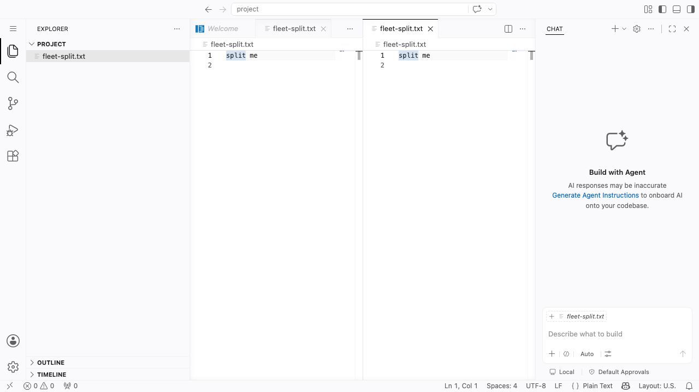
input.typeIntoEditor base PASS — typed "FLEET_TYPED_OK" appears in /home/coder/project/fleet-input.txt
{"procs":"9→9","memMiB":6,"fsChanges":67,"diskMiB":0,"netBytes":{"rx":23000,"tx":10000}}{"effect":26653}{
"path": "/home/coder/project/fleet-input.txt",
"typed": "FLEET_TYPED_OK",
"fileContent": "seed-line\nFLEET_TYPED_OK",
"editorText": "seed-line\nFLEET_TYPED_OK"
}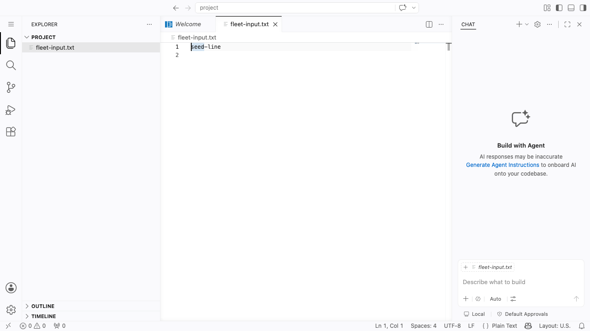
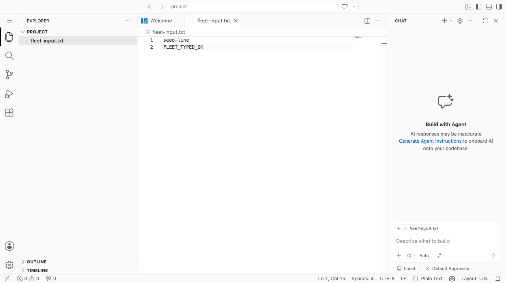
agent.claudeRuns base PASS — Hub session "r1-base": idle→working→idle (run completed)
{"procs":"9→11","memMiB":57,"fsChanges":87,"diskMiB":0.1,"netBytes":{"rx":459000,"tx":420000}}{"effect":12554}{
"sessionTitle": "r1-base",
"startState": "idle",
"statesSeen": [
"idle",
"working"
],
"finalLine": "[idle] r1-base-f0 (no runs)",
"terminalsBefore": 0,
"terminalsAfter": 1
}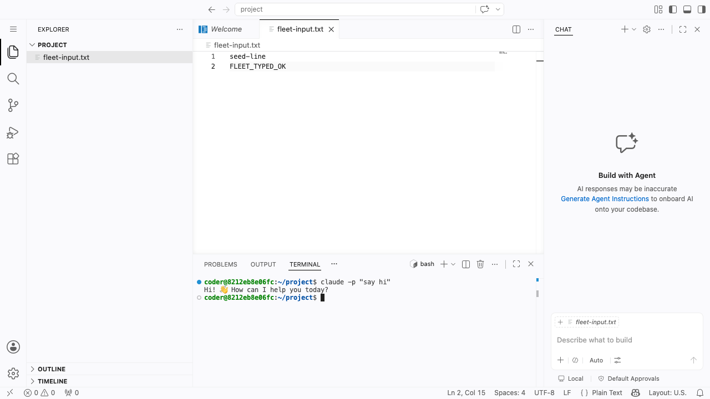

agent.waitingState base PASS — Hub session "r1-base" reached "waiting" via a controlled PreToolUse-without-Stop (states: working->waiting)
{"procs":"11→11","memMiB":0,"fsChanges":87,"diskMiB":0,"netBytes":{"rx":12000,"tx":0}}{"effect":3888}{
"sessionTitle": "r1-base",
"startState": "idle",
"statesSeen": [
"working",
"waiting"
],
"finalLine": "[waiting] r1-base (2 runs) [approval]"
}
file.rename base PASS — disk renamed; tab references fleet-rename-new.txt: true
{"procs":"10→10","memMiB":9,"fsChanges":67,"diskMiB":0,"netBytes":{"rx":32000,"tx":10000}}{"effect":30113}{
"tabsBefore": [
"Welcome",
"fleet-rename-old.txt"
],
"tabsAfter": [
"Welcome",
"fleet-rename-new.txt"
],
"activeAfter": "/home/coder/project/fleet-rename-new.txt"
}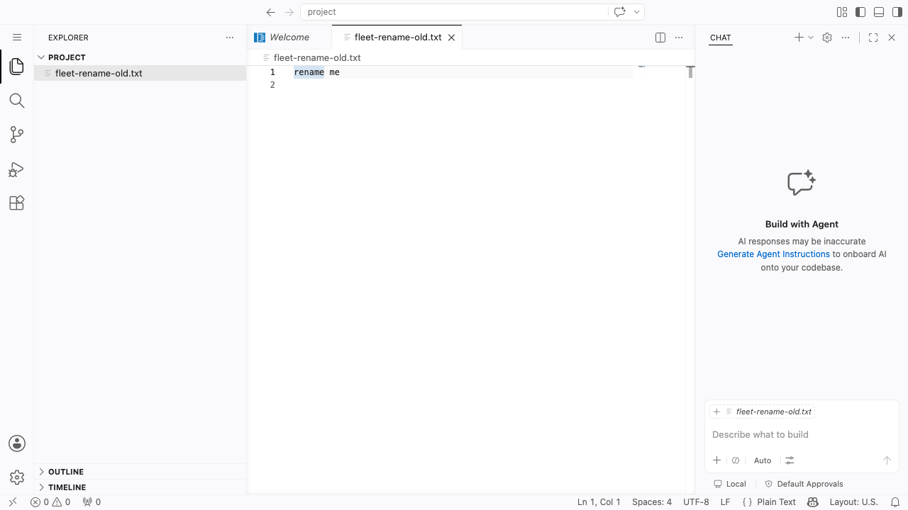
quickOpen.byName base PASS — activeEditor="/home/coder/project/fleet-quickopen.txt" (want fleet-quickopen.txt)
{"procs":"9→9","memMiB":1,"fsChanges":63,"diskMiB":0,"netBytes":{"rx":27000,"tx":10000}}{"effect":30461}{
"activeBefore": null,
"activeAfter": "/home/coder/project/fleet-quickopen.txt"
}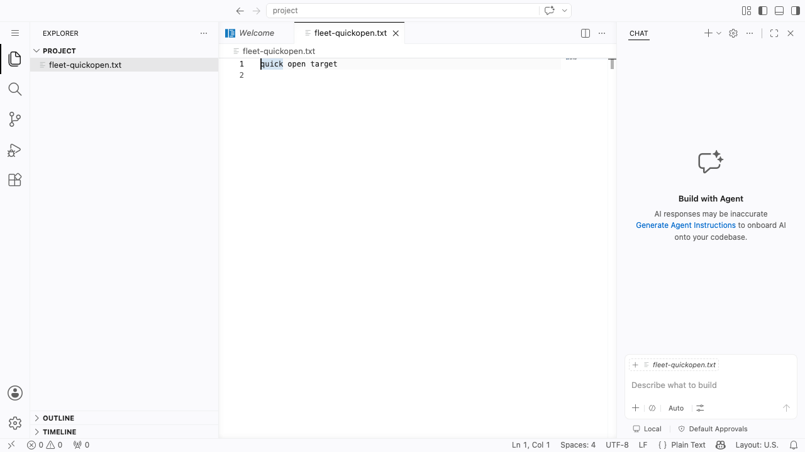
palette.open base PASS — executeCommand(showCommands) returned ok
{"procs":"11→11","memMiB":0,"fsChanges":87,"diskMiB":0,"netBytes":{"rx":9000,"tx":10000}}{"effect":16387}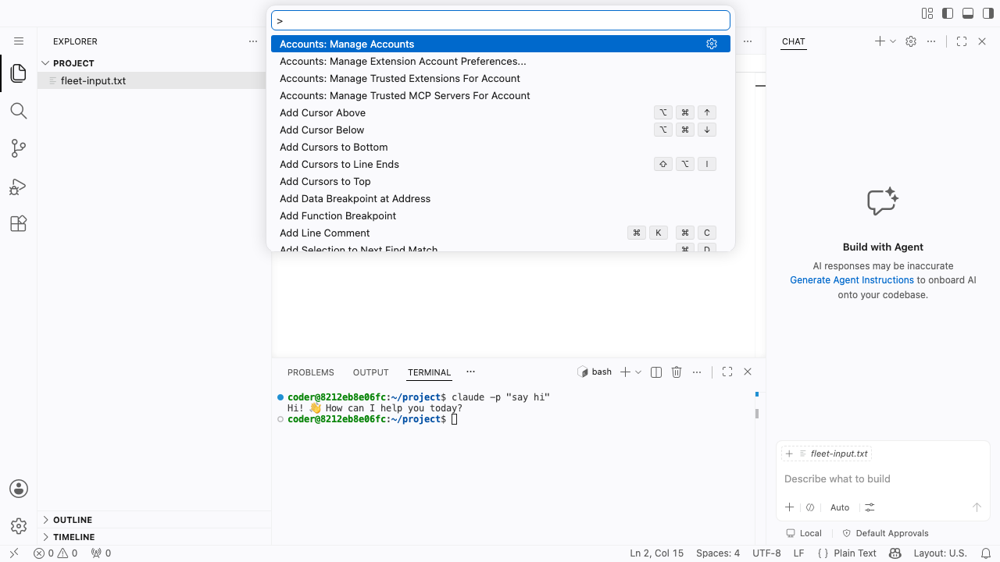
git.initStageCommit base PASS — git log shows 1 commit ("fleet: initial commit"), tree clean
{"procs":"9→10","memMiB":5,"fsChanges":105,"diskMiB":0.2,"netBytes":{"rx":32000,"tx":20000}}{"effect":20297}{
"commits": 1,
"subject": "fleet: initial commit",
"statusAfter": ""
}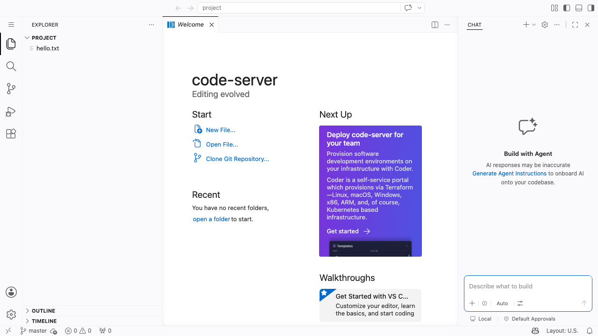
file.openWelcomeClose base PASS — openTabs 2 → 1
{"procs":"11→11","memMiB":0,"fsChanges":87,"diskMiB":0,"netBytes":{"rx":8000,"tx":0}}{"effect":7503}{
"beforeTabs": [
"Welcome",
"fleet-input.txt"
],
"afterTabs": [
"Welcome"
]
}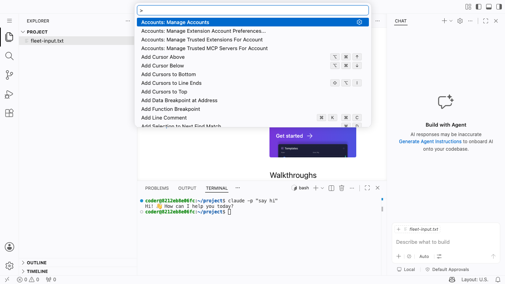
agent.workingState base PASS — Hub session "r1-base-f7" reached "working" after UserPromptSubmit (states: working)
{"procs":"9→9","memMiB":0,"fsChanges":61,"diskMiB":0,"netBytes":{"rx":6000,"tx":0}}{"effect":2058}{
"sessionTitle": "r1-base-f7",
"startState": "idle",
"statesSeen": [
"working"
],
"finalLine": "[working] r1-base-f7 (1 run)"
}search.findInFiles base PASS — executeCommand(findInFiles) returned ok (no view in snapshot to assert)
{"procs":"11→11","memMiB":1,"fsChanges":87,"diskMiB":0,"netBytes":{"rx":13000,"tx":10000}}{"effect":14064}{
"beforeView": null,
"afterView": null
}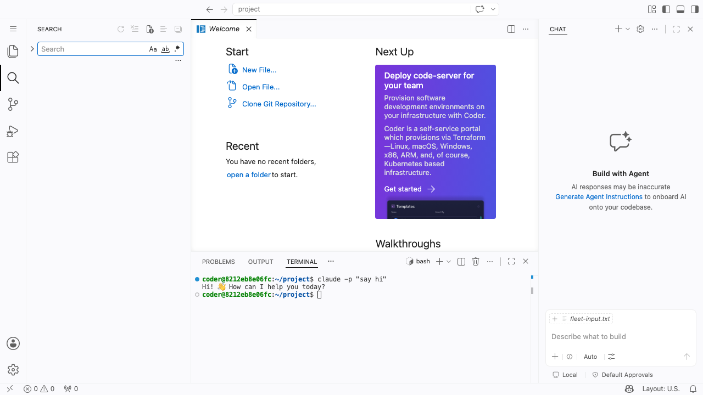
agent.stopIdle base PASS — Hub session "r1-base-f8": working→idle on a bare Stop
{"procs":"10→10","memMiB":1,"fsChanges":66,"diskMiB":0,"netBytes":{"rx":6000,"tx":0}}{"effect":2087}{
"sessionTitle": "r1-base-f8",
"sawWorking": true,
"sawIdle": true,
"statesSeen": [
"working",
"idle"
],
"finalLine": "[idle] r1-base-f8 (1 run)"
}
search.replaceAll base PASS — replaced all FINDME→REPLACED (2 occurrences)
{"procs":"11→11","memMiB":0,"fsChanges":88,"diskMiB":0,"netBytes":{"rx":11000,"tx":10000}}{"effect":9681}{
"seededOk": true,
"before": "alpha FINDME beta\nFINDME gamma\nno match here\n",
"after": "alpha REPLACED beta\nREPLACED gamma\nno match here\n"
}git.diffDecorations base PASS — 1 tracked change detected (M tracked.txt)
{"procs":"10→11","memMiB":9,"fsChanges":109,"diskMiB":0.2,"netBytes":{"rx":36000,"tx":20000}}{"effect":20106}{
"cleanBefore": true,
"changedFiles": 1,
"porcelain": "M tracked.txt",
"snapshotScmChanges": null,
"beforeShot": "artifacts/r1-base-f6-git.diffDecorations.before.png"
}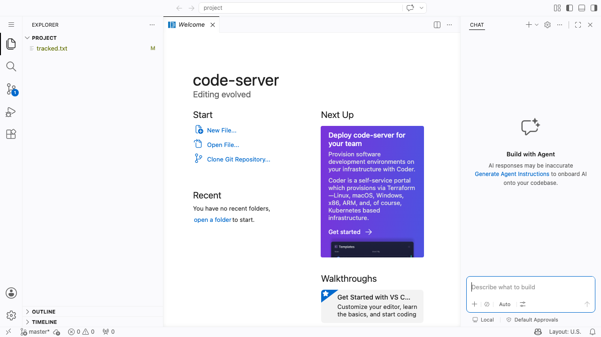

file.openMissing base PASS — ok:false with error "request failed: CodeExpectedError: cannot open vscode-remote://127.0.0.1:64171/home/coder/project/ghost.txt. Detail: Unable to read file 'vscode-remote://127.0.0.1:64171/home/coder/project/ghost.txt' (Error: Unable to resolve nonexistent file 'vscode-remote://127.0.0.1:64171/home/coder/project/ghost.txt')" (defined refusal)
{"procs":"11→11","memMiB":0,"fsChanges":89,"diskMiB":0,"netBytes":{"rx":8000,"tx":0}}{"effect":6684}{
"activeBefore": "/home/coder/project/fleet-open-seed.txt",
"activeAfter": "/home/coder/project/fleet-open-seed.txt",
"ok": false,
"err": "request failed: CodeExpectedError: cannot open vscode-remote://127.0.0.1:64171/home/coder/project/ghost.txt. Detail: Unable to read file 'vscode-remote://127.0.0.1:64171/home/coder/project/ghost.txt' (Error: Unable to resolve nonexistent file 'vscode-remote://127.0.0.1:64171/home/coder/project/ghost.txt')",
"timedOut": false
}
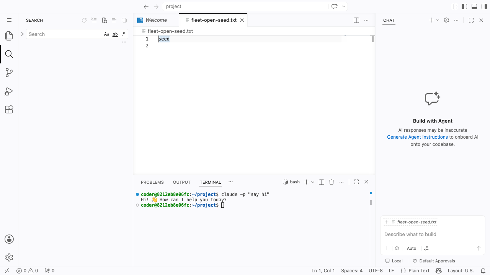
agent.stopDone base PASS — Hub session "r1-base-f9": working→done on a Stop with reason:"completed"
{"procs":"10→10","memMiB":0,"fsChanges":67,"diskMiB":0,"netBytes":{"rx":5000,"tx":0}}{"effect":2082}{
"sessionTitle": "r1-base-f9",
"sawWorking": true,
"sawDone": true,
"statesSeen": [
"working",
"done"
],
"finalLine": "[done] r1-base-f9 (1 run)"
}
agent.waitingCoalesced base PASS — Hub session "r1-base-f11": one waiting coalesced across two PreToolUse (runs 0→1, ≤ +1)
{"procs":"9→9","memMiB":0,"fsChanges":61,"diskMiB":0,"netBytes":{"rx":14000,"tx":0}}{"effect":7869}{
"sessionTitle": "r1-base-f11",
"baseRuns": 0,
"endRuns": 1,
"sawWaiting": true,
"stillWaiting": true,
"finalLine": "[waiting] r1-base-f11 (1 run) [approval]"
}
agent.waitingCancelled base PASS — Hub session "r1-base-f10" never showed "waiting"; settled idle (the pre-debounce Stop cancelled the arm)
{"procs":"9→9","memMiB":0,"fsChanges":61,"diskMiB":0,"netBytes":{"rx":15000,"tx":0}}{"effect":7973}{
"sessionTitle": "r1-base-f10",
"sawWaiting": false,
"sawIdle": true,
"statesSeen": [
"idle"
],
"finalLine": "[idle] r1-base-f10 (1 run)"
}view.explorer base PASS — workbench.view.explorer resolved ok (no view in snapshot to assert); repeat also ok
{"procs":"11→11","memMiB":-71,"fsChanges":89,"diskMiB":0,"netBytes":{"rx":12000,"tx":0}}{"effect":11259}{
"beforeView": null,
"afterView": null
}
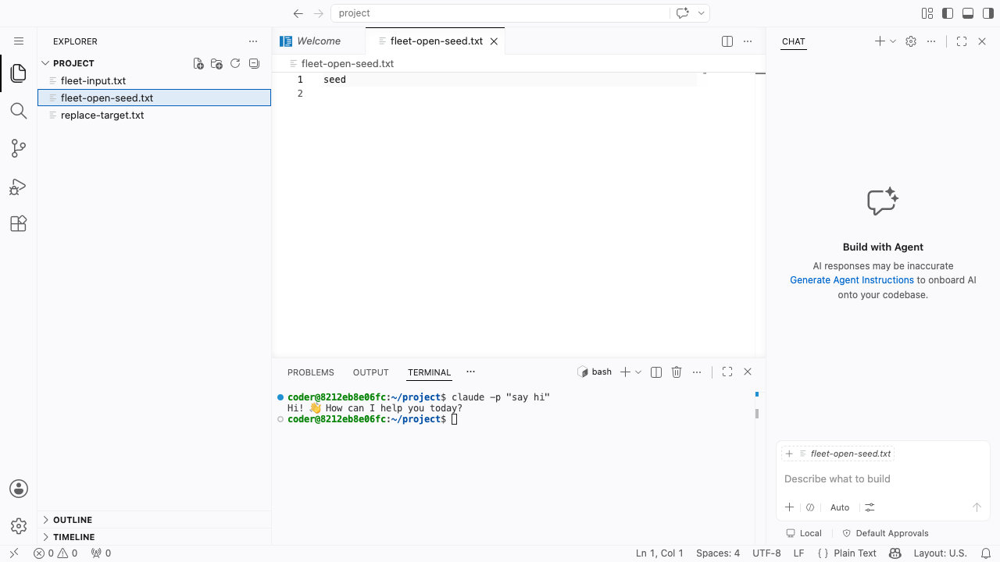
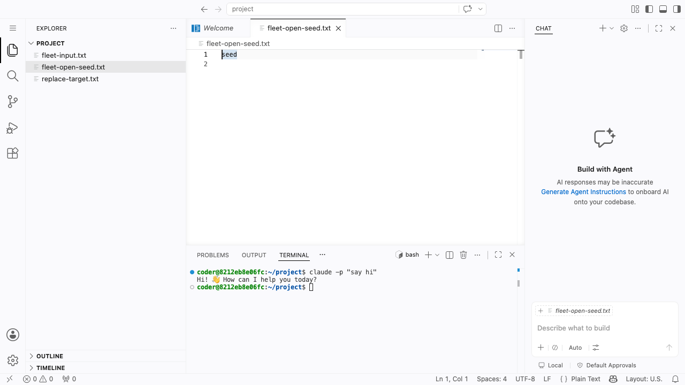
agent.multiTurnOneRun base PASS — Hub session "r1-base-f13": two turns cycled working↔idle on ONE run (runs 0→1, ≤ +1)
{"procs":"10→10","memMiB":1,"fsChanges":66,"diskMiB":0,"netBytes":{"rx":11000,"tx":0}}{"effect":2008}{
"sessionTitle": "r1-base-f13",
"baseRuns": 0,
"endRuns": 1,
"cycle": {
"w1": true,
"i1": true,
"w2": true,
"i2": true
},
"finalLine": "[idle] r1-base-f13 (1 run)"
}
agent.subagentStopLiveness base PASS — Hub session "r1-base-f14": SubagentStop kept the run working; a real Stop then settled idle
{"procs":"10→10","memMiB":3,"fsChanges":66,"diskMiB":0,"netBytes":{"rx":23000,"tx":10000}}{"effect":9697}{
"sessionTitle": "r1-base-f14",
"sawWorking": true,
"idleAfterSubagentStop": false,
"stillWorking": true,
"idleAfterStop": true,
"finalLine": "[idle] r1-base-f14 (1 run)"
}
agent.sessionEndDead base PASS — Hub session "r1-base-f12": working→dead on SessionEnd
{"procs":"10→10","memMiB":1,"fsChanges":66,"diskMiB":0,"netBytes":{"rx":6000,"tx":0}}{"effect":2081}{
"sessionTitle": "r1-base-f12",
"sawWorking": true,
"sawDead": true,
"statesSeen": [
"working",
"dead"
],
"finalLine": "[dead] r1-base-f12 (1 run)"
}
scm.openView base PASS — workbench.view.scm resolved ok (no view in snapshot to assert); repeat also ok
{"procs":"11→11","memMiB":2,"fsChanges":117,"diskMiB":0.1,"netBytes":{"rx":54000,"tx":20000}}{"effect":18537}{
"beforeView": null,
"afterView": null
}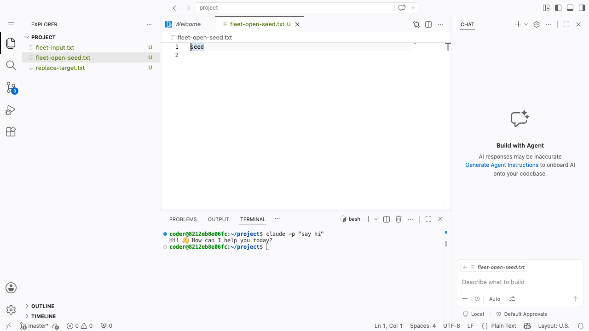
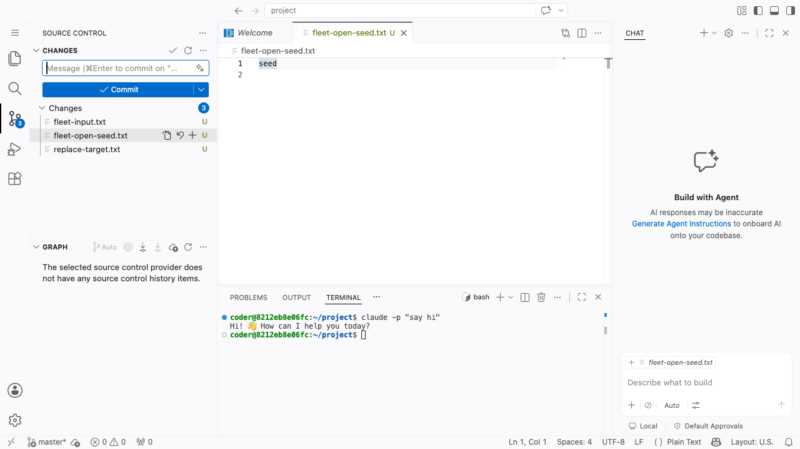

life.bannerAndRunning base PASS — fleet-eval-r1-base Running=true; banner ok (hub=ws://host.docker.internal:51777 / bridge=ws://host.docker.internal:51778)
{"procs":"11→11","memMiB":0,"fsChanges":117,"diskMiB":0,"netBytes":{"rx":0,"tx":0}}{"effect":1614}{
"name": "fleet-eval-r1-base",
"running": "true",
"bannerLine": "[fleet-env] id=r1-base host=host.docker.internal hub=ws://host.docker.internal:51777 bridge=ws://host.docker.internal:51778",
"want": {
"wantHost": "host=host.docker.internal",
"wantHub": "hub=ws://host.docker.internal:51777",
"wantBridge": "bridge=ws://host.docker.internal:51778"
}
}
life.reporterSessionRegistered base PASS — Hub session "r1-base" registered; reporter pid=8
{"procs":"11→11","memMiB":0,"fsChanges":117,"diskMiB":0,"netBytes":{"rx":0,"tx":0}}{"effect":1943}{
"sessionTitle": "r1-base",
"reporterPid": "8",
"sessionLine": "[done] r1-base-f9 (1 run)"
}
net.derivedDialUrls base PASS — FLEET_HUB_URL=ws://host.docker.internal:51777, FLEET_BRIDGE_URL=ws://host.docker.internal:51778
{"procs":"11→11","memMiB":0,"fsChanges":117,"diskMiB":0,"netBytes":{"rx":1000,"tx":0}}{"effect":2098}{
"hubUrl": "ws://host.docker.internal:51777",
"bridgeUrl": "ws://host.docker.internal:51778",
"wantHub": "ws://host.docker.internal:51777",
"wantBridge": "ws://host.docker.internal:51778"
}
net.hostDockerInternalReachable base PASS — host.docker.internal resolves (192.168.5.2) and :51777 is reachable (nc rc=0)
{"procs":"11→11","memMiB":0,"fsChanges":117,"diskMiB":0,"netBytes":{"rx":1000,"tx":0}}{"effect":2023}{
"resolved": "192.168.5.2 host.docker.internal",
"ncRc": "0"
}net.hubBoundAllInterfaces base PASS — Hub :51777 reachable from BOTH host loopback and the container (0.0.0.0 bind confirmed)
{"procs":"11→11","memMiB":0,"fsChanges":117,"diskMiB":0,"netBytes":{"rx":1000,"tx":0}}{"effect":2029}{
"hostRc": "0",
"containerRc": "0"
}
agent.waitingApprovalUrgency base PASS — Hub session "r1-base-f15" row shows [waiting] AND [approval] ("[waiting] r1-base-f15 (1 run) [approval]")
{"procs":"10→10","memMiB":2,"fsChanges":66,"diskMiB":0,"netBytes":{"rx":21000,"tx":0}}{"effect":7985}{
"sessionTitle": "r1-base-f15",
"statesSeen": [
"working",
"waiting"
],
"finalLine": "[waiting] r1-base-f15 (1 run) [approval]"
}agent.concurrentSessions base PASS — Hub session "r1-base-f16": two concurrent sessions → +2 runs (0→2); anchorless frame minted no phantom; settled idle
{"procs":"10→10","memMiB":1,"fsChanges":66,"diskMiB":0,"netBytes":{"rx":15000,"tx":10000}}{"effect":2041}{
"sessionTitle": "r1-base-f16",
"baseRuns": 0,
"finalRuns": 2,
"sawTwoRuns": true,
"sawIdle": true,
"finalLine": "[idle] r1-base-f16 (2 runs)"
}
net.bridgeQueryRoundTrip base PASS — query round-tripped a Snapshot (terminalCount=1)
{"procs":"11→11","memMiB":0,"fsChanges":117,"diskMiB":0,"netBytes":{"rx":0,"tx":10000}}{"effect":6095}{
"terminalCount": 1,
"terminals": [
"bash"
],
"activeEditor": "/home/coder/project/fleet-open-seed.txt"
}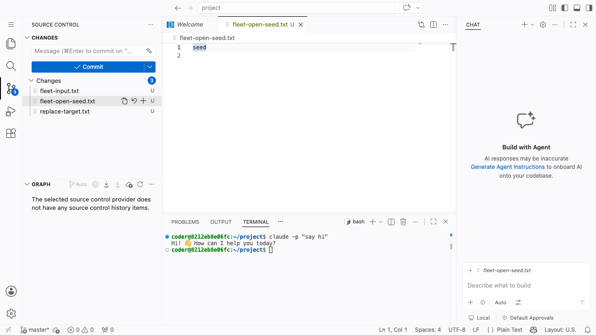
agent.emptyQuiescent base PASS — Hub session "r1-base-f17" is quiescent [idle] with no spurious working/waiting
{"procs":"10→10","memMiB":2,"fsChanges":66,"diskMiB":0,"netBytes":{"rx":8000,"tx":0}}{"effect":6025}{
"sessionTitle": "r1-base-f17",
"startState": "idle",
"sawActivity": false,
"idleNow": true,
"finalLine": "[idle] r1-base-f17 (no runs)"
}net.reporterSocketLocalOnly base PASS — /tmp/fleet-reporter.sock is a unix socket mode 600; no in-container hook TCP listener (ss/netstat absent — TCP check best-effort)
{"procs":"11→11","memMiB":0,"fsChanges":117,"diskMiB":0,"netBytes":{"rx":0,"tx":0}}{"effect":1686}{
"sock": "/tmp/fleet-reporter.sock",
"isSock": true,
"mode": "600",
"listenerPorts": [],
"hasHookTcp": false
}hub.runUpsertRecomputesRollup base PASS — env Hub session "r1-base": done→working after one injected run.upsert (UserPromptSubmit)
{"procs":"11→11","memMiB":0,"fsChanges":117,"diskMiB":0,"netBytes":{"rx":0,"tx":0}}{"effect":1661}{
"sessionTitle": "r1-base",
"startState": "done",
"statesSeen": [
"working"
],
"finalLine": "[working] r1-base (3 runs)"
}editor.openMissingNoop base PASS — reply ok:false; activeEditor unchanged; file still absent
{"procs":"10→10","memMiB":10,"fsChanges":66,"diskMiB":0,"netBytes":{"rx":11000,"tx":10000}}{"effect":14161}{
"activeBefore": null,
"activeAfter": null,
"replyOk": false,
"absentBefore": true,
"absentAfter": true
}

editor.closeAllEmpties base PASS — openTabs 3 → 0 (want 0); activeEditor=null (want null)
{"procs":"9→9","memMiB":6,"fsChanges":64,"diskMiB":0,"netBytes":{"rx":19000,"tx":10000}}{"effect":18872}{
"tabsBefore": [
"Welcome",
"a.txt",
"b.txt"
],
"tabsAfter": [],
"activeAfter": null
}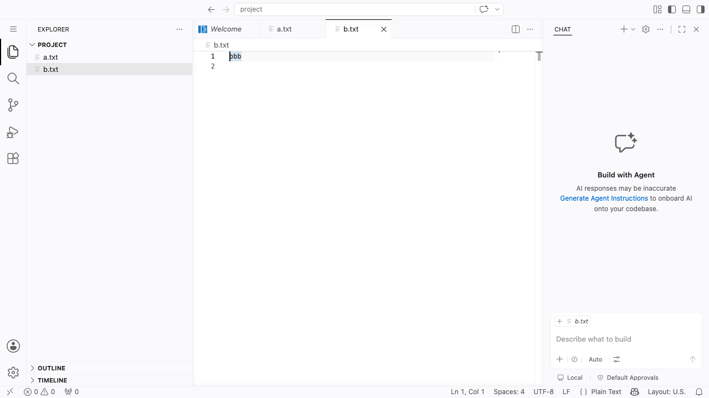

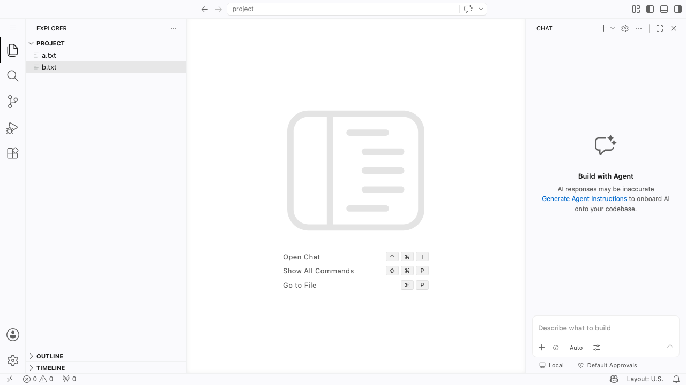
editor.splitDown base PASS — visibleEditors 1 → 2 (want +1)
{"procs":"10→10","memMiB":6,"fsChanges":68,"diskMiB":0,"netBytes":{"rx":18000,"tx":10000}}{"effect":18811}{
"before": [
"/home/coder/project/fleet-splitdown.txt"
],
"after": [
"/home/coder/project/fleet-splitdown.txt",
"/home/coder/project/fleet-splitdown.txt"
]
}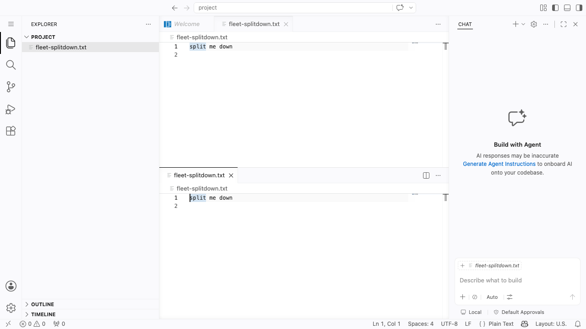
hub.doneDistinctFromIdle base FAIL — done/idle not both observed as distinct tokens (done="done", idle="done"; doneSeen=["done"], idleSeen=["done"])
[uncommitted·—] containers/fleet-env/eval/behaviours/spec-l2-hub.mjsWHAT: Verifies D9 (Done ≠ Idle) end-to-end through the real reporter + Hub + CLI,
deterministically. Under one fresh injected `session_id` we drive a turn to
completion two ways and read the env session's bracketed rollup token each time:
(1) `UserPromptSubmit` then `Stop{task_complete:true}` → the run lands `done`, so the
single-run rollup renders `[done]`; (2) a second `UserPromptSubmit` then a PLAIN
`Stop` → the run lands `idle`, so the rollup renders `[idle]`. We assert the two
observed tokens are literally different strings ("done" vs "idle"), i.e. the wire
state is never collapsed. (We re-poll for `done` first, then for `idle`, on the SAME
env session; both are reached off `fleet ls --once`.)
WHY THIS IS THE EXPECTED OUTCOME: the claude adapter maps a `Stop` carrying a
completion marker (task_complete / subtype success, and NOT stop_hook_active) to
`State::Done`, and a bare `Stop` to `State::Idle` (claude.rs). State has distinct
kebab wire tokens "done" vs "idle" (state_wire_tokens) and Done ranks strictly above
Idle in the rollup (done_distinct_and_ranks_above_idle), so a one-run session reads
`[done]` then `[idle]` across the two turns. "Task complete" must be visually
distinguishable from "awaiting the next prompt" — that is the entire point of D9.
WHY IT MATTERS: if Done were ever folded into Idle (a tempting simplification — both
mean "not currently working"), users would lose the "this finished" vs "this is
waiting for me to drive it again" distinction that the inbox is built on. This is the
only E2E guard that the done/idle SPLIT survives the full Stop-frame → adapter →
rollup → CLI render path; the Rust units pin the tokens and the rank in isolation.
SKIPs cleanly when the Hub/CLI is absent.{"procs":"11→11","memMiB":0,"fsChanges":117,"diskMiB":0,"netBytes":{"rx":10000,"tx":20000}}{"effect":33314}{
"sessionTitle": "r1-base",
"doneToken": "done",
"idleToken": "done",
"doneStatesSeen": [
"done"
],
"idleStatesSeen": [
"done"
]
}
hub.waitingWinsRollup base PASS — env Hub session "r1-base" rolled up to "[waiting]" with a concurrent working run present (waiting dominates; states: working->waiting)
{"procs":"11→11","memMiB":0,"fsChanges":117,"diskMiB":0,"netBytes":{"rx":0,"tx":10000}}{"effect":4622}{
"sessionTitle": "r1-base",
"startState": "done",
"statesSeen": [
"working",
"waiting"
],
"finalLine": "[waiting] r1-base (6 runs) [approval]",
"workRun": "hub010-work-r1-base-1781046693076",
"waitRun": "hub010-wait-r1-base-1781046693076"
}editor.newUntitled base PASS — openTabs 1 → 2 (want +1); activeEditor="Untitled-1" untitled=true
{"procs":"10→10","memMiB":5,"fsChanges":67,"diskMiB":0,"netBytes":{"rx":37000,"tx":60000}}{"effect":14541}{
"tabsBefore": [
"Welcome"
],
"tabsAfter": [
"Welcome",
"Untitled-1"
],
"activeAfter": "Untitled-1"
}

reporter.socketMode0600 base PASS — /tmp/fleet-reporter.sock is mode 0600 (owner-only) as restrict_socket_perms requires
{"procs":"11→11","memMiB":0,"fsChanges":117,"diskMiB":0,"netBytes":{"rx":0,"tx":0}}{"effect":2083}{
"sock": "/tmp/fleet-reporter.sock",
"mode": "600"
}editor.selectAll base PASS — selection {"line":0,"character":0}→{"line":3,"character":0} (want start 0,0; end.line>=2)
{"procs":"10→10","memMiB":7,"fsChanges":68,"diskMiB":0,"netBytes":{"rx":57000,"tx":30000}}{"effect":22586}{
"selection": {
"start": {
"line": 0,
"character": 0
},
"end": {
"line": 3,
"character": 0
}
}
}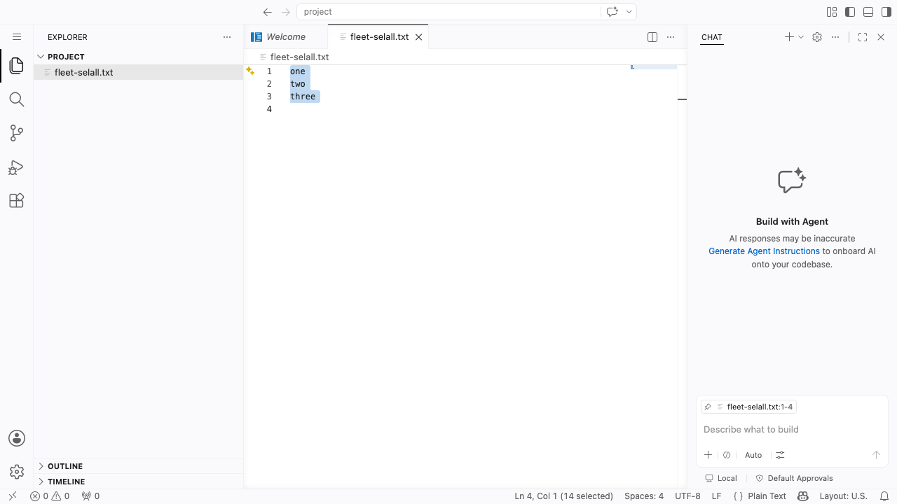
editor.nextPrevCycles base PASS — start active="/home/coder/project/b.txt" (want b.txt); after next moved-away=true; after prev returned=true
{"procs":"9→9","memMiB":2,"fsChanges":64,"diskMiB":0,"netBytes":{"rx":66000,"tx":10000}}{"effect":33605}{
"start": "/home/coder/project/b.txt",
"afterNext": null,
"afterPrev": "/home/coder/project/b.txt"
}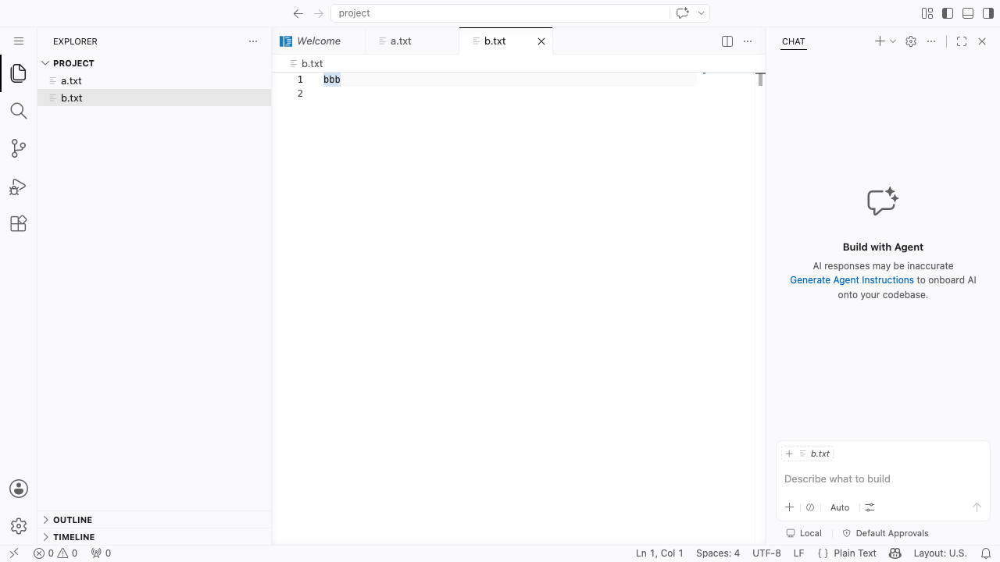
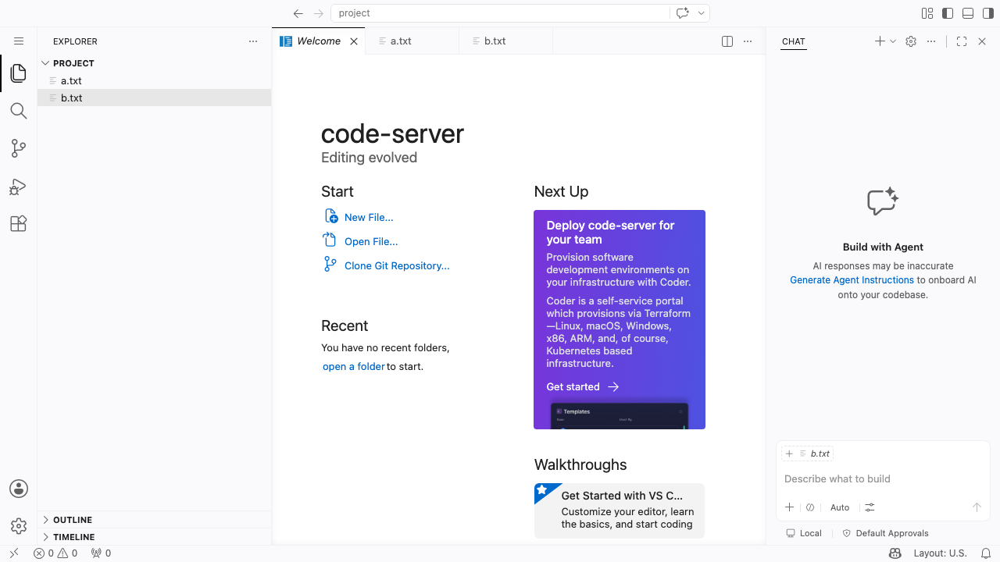


input.typeUntitled base PASS — editorText contains "HELLO_UNTITLED"
{"procs":"10→10","memMiB":7,"fsChanges":71,"diskMiB":0,"netBytes":{"rx":17000,"tx":230000}}{"effect":12331}{
"editorText": "HELLO_UNTITLED",
"typed": "HELLO_UNTITLED"
}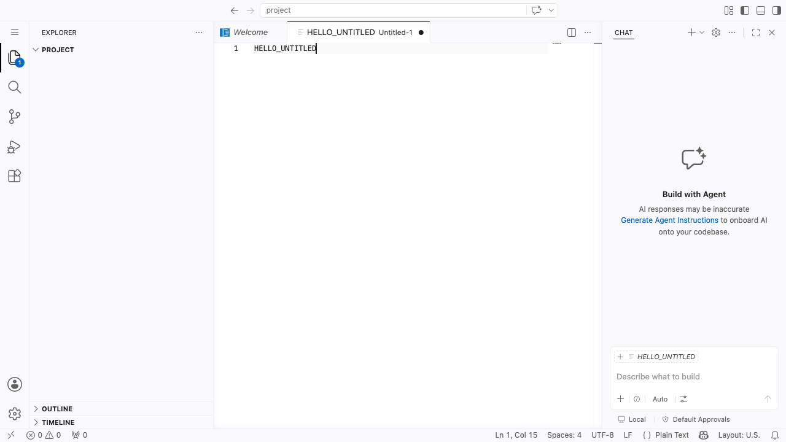
input.typeNoEditor base PASS — typeText inserted=false (want false); activeEditor still null=true; PROJECT listing unchanged=true
{"procs":"10→10","memMiB":5,"fsChanges":67,"diskMiB":0,"netBytes":{"rx":18000,"tx":10000}}{"effect":20333}{
"activeBefore": null,
"activeAfter": null,
"lsBefore": "",
"lsAfter": ""
}editor.openSameNoDup base PASS — openTabs 2 → 2 (want no change); active=true (want c.txt)
{"procs":"10→10","memMiB":10,"fsChanges":68,"diskMiB":0,"netBytes":{"rx":24000,"tx":20000}}{"effect":20014}{
"tabsBefore": [
"Welcome",
"c.txt"
],
"tabsAfter": [
"Welcome",
"c.txt"
],
"activeAfter": "/home/coder/project/c.txt"
}

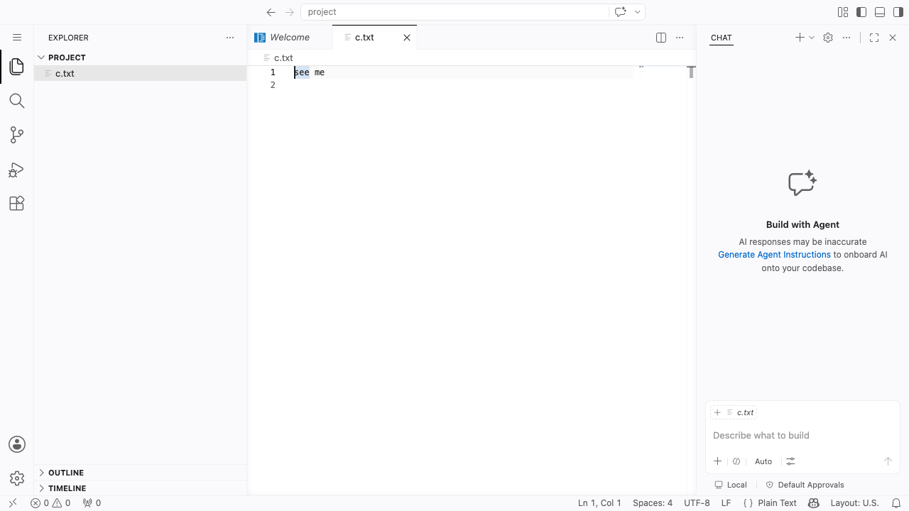
reporter.promptWorkingThenStopIdle base FAIL — working/idle not both observed (working=true, idle=false; states seen: ["working","done"])
[uncommitted·—] containers/fleet-env/eval/behaviours/spec-l2-reporter.mjsWHAT: Drives the canonical S15 turn lifecycle end-to-end through the real reporter
socket and asserts the Hub session reflects it. It sends a synthetic
`claude {hook_event_name:"UserPromptSubmit", session_id:<unique>}` frame to the
env's /tmp/fleet-reporter.sock, polls the host Hub (`fleet ls --once`) until the
env's session row reads `[working]`, then sends a real turn-boundary
`Stop` (stop_hook_active:false, no completion marker) and polls until the row reads
`[idle]`. The Stop is sent regardless (it is also the cleanup) so the session is left
quiescent.
WHY THIS IS THE EXPECTED OUTCOME: A UserPromptSubmit is the canonical activity signal
— the ClaudeAdapter maps it to State::Working (Inferred), anchored on the verbatim
session_id, and the reporter phones an UpsertRun(Working) home, which the CLI renders
`[working]`. A bare Stop (no completion marker, not fired from inside a Stop hook) is
THE turn-boundary completion signal for the native UI; absent a marker the adapter is
conservatively Idle (D9: never over-claim Done), so the row settles to `[idle]`. This
is the proven, deterministic counterpart to agent.waitingState's PreToolUse path —
the same socket, adapters, phone-home and render, but exercising the working/idle spine
instead of the inferred-waiting one.
WHY IT MATTERS: working→idle is the backbone of agent observability; if it regresses,
every Fleet user's session list goes stale or wrong (an active agent shows idle, or a
finished one is stuck working). The Rust unit test
`process_claude_prompt_then_stop_drives_working_then_idle` proves the adapter
mapping in isolation; THIS guards the full socket→Hub→CLI path the unit test cannot
reach. Determinism over realism: we inject the exact frames rather than driving a live
claude (whose timing/version would make catching the brief working window flaky). Hub
absence SKIPs cleanly — environmental, not a regression.{"procs":"11→11","memMiB":0,"fsChanges":117,"diskMiB":0,"netBytes":{"rx":20000,"tx":20000}}{"effect":33482}{
"sessionTitle": "r1-base",
"sid": "rpt-pi-r1-base",
"startState": "done",
"statesSeen": [
"working",
"done"
],
"finalLine": "[done] r1-base-f9 (1 run)"
}reporter.twoSessionsTwoRuns base PASS — Hub session "r1-base": two sessions → 9 runs; resolving A left 9 (≥3) — independent runs
{"procs":"11→11","memMiB":0,"fsChanges":117,"diskMiB":0,"netBytes":{"rx":0,"tx":10000}}{"effect":1895}{
"sessionTitle": "r1-base",
"sidA": "rpt-2s-r1-base-a",
"sidB": "rpt-2s-r1-base-b",
"baseRuns": 1,
"want": 3,
"runsAfterBoth": 9,
"runsAfterResolveA": 9,
"finalLine": "[working] r1-base (9 runs)"
}search.findInFilesIdempotent base PASS — second findInFiles left terminalCount/openTabs/activeEditor identical
{"procs":"11→11","memMiB":0,"fsChanges":117,"diskMiB":0,"netBytes":{"rx":0,"tx":10000}}{"effect":6500}{
"first": {
"terminalCount": 1,
"activeEditor": "/home/coder/project/fleet-open-seed.txt",
"openTabs": [
"Welcome",
"fleet-open-seed.txt"
]
},
"second": {
"terminalCount": 1,
"activeEditor": "/home/coder/project/fleet-open-seed.txt",
"openTabs": [
"Welcome",
"fleet-open-seed.txt"
]
}
}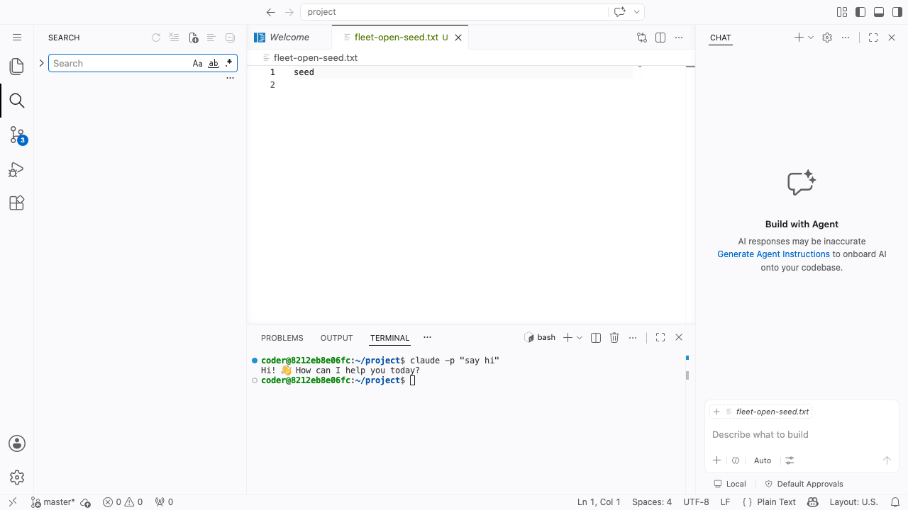
search.replaceInFiles base PASS — workbench.action.replaceInFiles resolved (replace UI not in snapshot)
{"procs":"11→11","memMiB":0,"fsChanges":117,"diskMiB":0,"netBytes":{"rx":0,"tx":0}}{"effect":2452}input.multilineTypeText base PASS — content matches 3 lines=true; wc -l=2 (>=2)
{"procs":"9→9","memMiB":0,"fsChanges":66,"diskMiB":0,"netBytes":{"rx":16000,"tx":10000}}{"effect":12490}{
"buffer": "line1\nline2\nline3",
"disk": "line1\nline2\nline3",
"wc": 2
}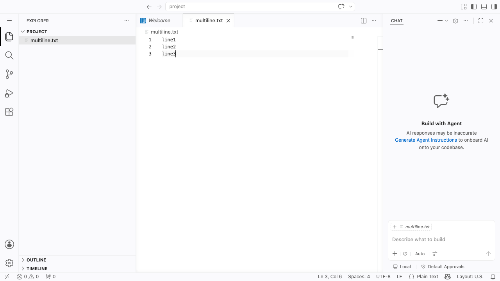
quickOpen.command base PASS — quickOpen resolved; activeEditor unchanged (no pick yet)
{"procs":"11→11","memMiB":0,"fsChanges":117,"diskMiB":0,"netBytes":{"rx":0,"tx":10000}}{"effect":8372}{
"activeBefore": "/home/coder/project/fleet-open-seed.txt",
"activeAfter": "/home/coder/project/fleet-open-seed.txt"
}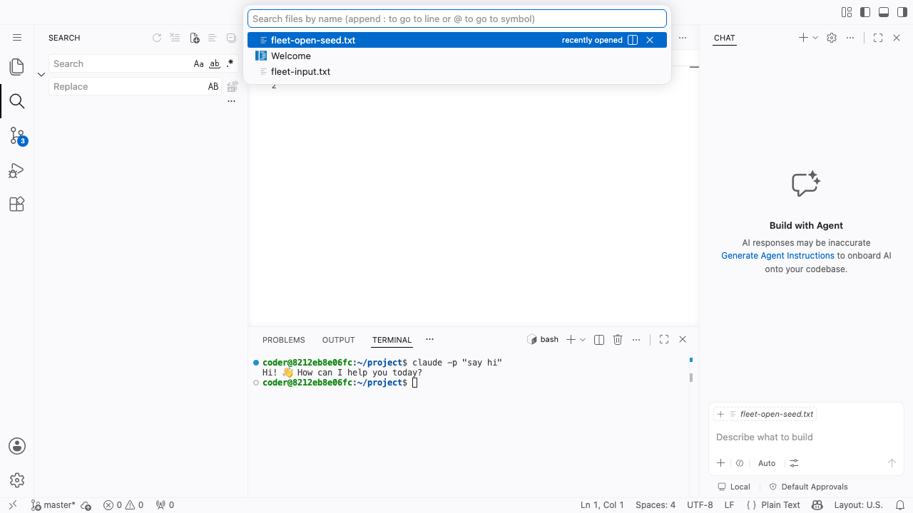
input.typeRoutesEditor base PASS — marker in editor=true (want true); marker in terminal=false (want false)
{"procs":"9→11","memMiB":44,"fsChanges":69,"diskMiB":0,"netBytes":{"rx":152000,"tx":200000}}{"effect":20474}{
"fileContent": "ROUTE_TO_EDITOR",
"terminalText": ""
}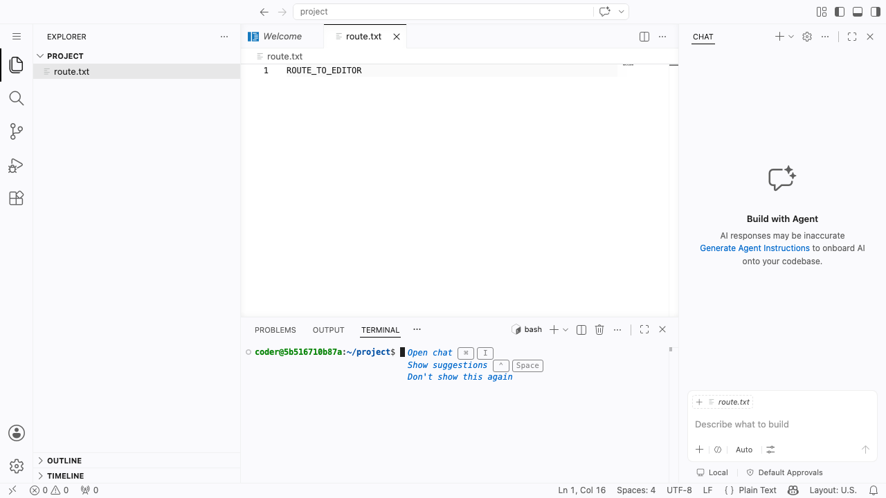
input.cursorMovesInsert base PASS — text starts "XX"=true, ends "YY"=true ("XXAAA\nBBB\nYY")
{"procs":"10→10","memMiB":8,"fsChanges":71,"diskMiB":0,"netBytes":{"rx":35000,"tx":20000}}{"effect":24430}{
"content": "XXAAA\nBBB\nYY"
}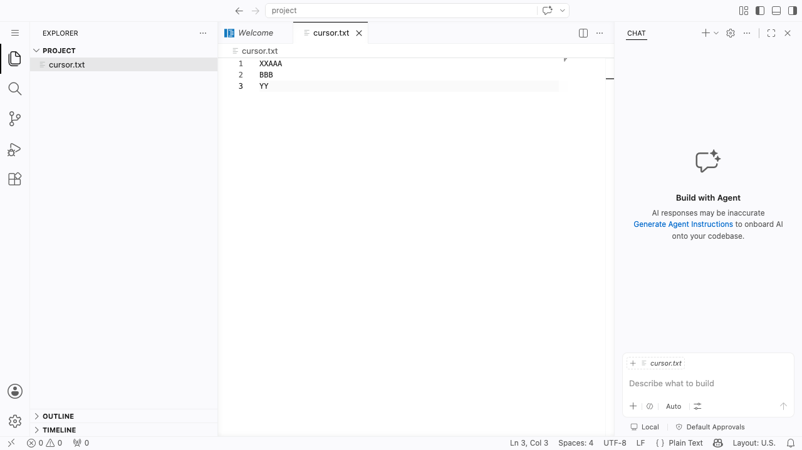
search.gotoSymbolWorkspace base PASS — showAllSymbols resolved; activeEditor + openTabs unchanged
{"procs":"11→11","memMiB":0,"fsChanges":117,"diskMiB":0,"netBytes":{"rx":0,"tx":10000}}{"effect":8763}{
"activeBefore": "/home/coder/project/fleet-open-seed.txt",
"activeAfter": "/home/coder/project/fleet-open-seed.txt",
"tabsBefore": [
"Welcome",
"fleet-open-seed.txt"
],
"tabsAfter": [
"Welcome",
"fleet-open-seed.txt"
]
}search.regexReplace base PASS — regex replace redacted 3 id= lines, preserved name=foo
{"procs":"11→11","memMiB":1,"fsChanges":118,"diskMiB":0,"netBytes":{"rx":10000,"tx":0}}{"effect":4142}{
"seededOk": true,
"original": "id=001\nid=042\nname=foo\nid=999\n",
"after": "id=REDACTED\nid=REDACTED\nname=foo\nid=REDACTED\n"
}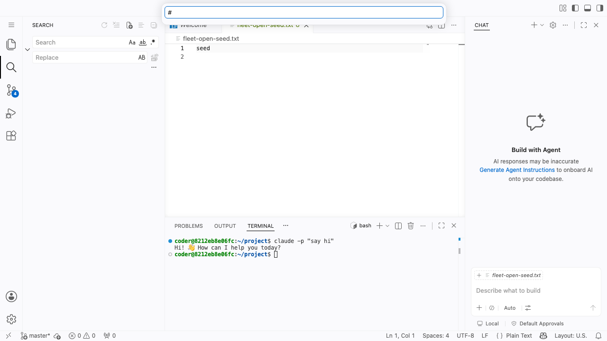
search.caseSensitiveReplace base PASS — case-sensitive replace touched only lowercase foo
{"procs":"11→11","memMiB":0,"fsChanges":119,"diskMiB":0,"netBytes":{"rx":0,"tx":10000}}{"effect":2767}{
"original": "Foo foo FOO\n",
"after": "Foo bar FOO\n",
"expected": "Foo bar FOO\n"
}input.unicodeTypeText base PASS — CJK present=true; emoji present=true; on-disk grep 🚀=true
{"procs":"10→10","memMiB":3,"fsChanges":71,"diskMiB":0,"netBytes":{"rx":14000,"tx":10000}}{"effect":8040}{
"buffer": "héllo — 你好 🚀",
"disk": "héllo — 你好 🚀",
"typed": "héllo — 你好 🚀"
}search.wholeWordReplace base PASS — whole-word replace touched only standalone cat
{"procs":"11→11","memMiB":0,"fsChanges":120,"diskMiB":0,"netBytes":{"rx":10000,"tx":10000}}{"effect":2786}{
"original": "cat category scatter cat\n",
"after": "dog category scatter dog\n",
"expected": "dog category scatter dog\n"
}input.termSendMultiCmd base PASS — seq file A=true B=true ("A\nB")
{"procs":"10→12","memMiB":48,"fsChanges":69,"diskMiB":0,"netBytes":{"rx":125000,"tx":190000}}{"effect":8449}{
"content": "A\nB\n"
}input.termSendCreates base PASS — terminalCount 0 → 1 (want 1); reply.terminal="bash"
{"procs":"10→12","memMiB":52,"fsChanges":68,"diskMiB":0,"netBytes":{"rx":133000,"tx":200000}}{"effect":18390}{
"terminalsAfter": [
"bash"
],
"replyTerminal": "bash"
}
view.paletteRepeat base PASS — showCommands x2 resolved; openTabs 2 → 2 (unchanged)
{"procs":"11→11","memMiB":0,"fsChanges":120,"diskMiB":0,"netBytes":{"rx":0,"tx":0}}{"effect":9034}{
"beforeTabs": [
"Welcome",
"fleet-open-seed.txt"
],
"afterTabs": [
"Welcome",
"fleet-open-seed.txt"
]
}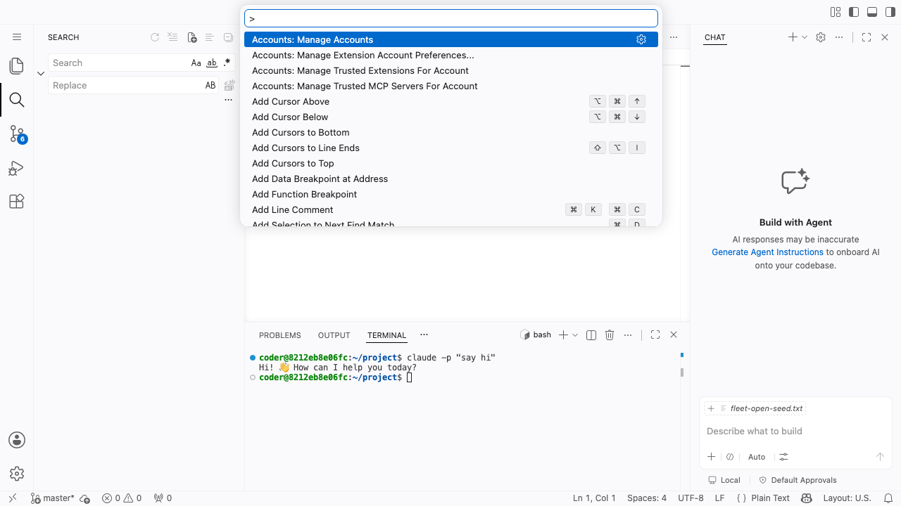
view.toggleSidebarRoundtrip base PASS — toggleSidebarVisibility x2 resolved; visibleEditors stable, openTabs stable
{"procs":"11→14","memMiB":1,"fsChanges":120,"diskMiB":0,"netBytes":{"rx":10000,"tx":10000}}{"effect":10706}{
"beforeVisible": [
"/home/coder/project/fleet-open-seed.txt"
],
"afterVisible": [
"/home/coder/project/fleet-open-seed.txt"
],
"beforeTabs": [
"Welcome",
"fleet-open-seed.txt"
],
"afterTabs": [
"Welcome",
"fleet-open-seed.txt"
]
}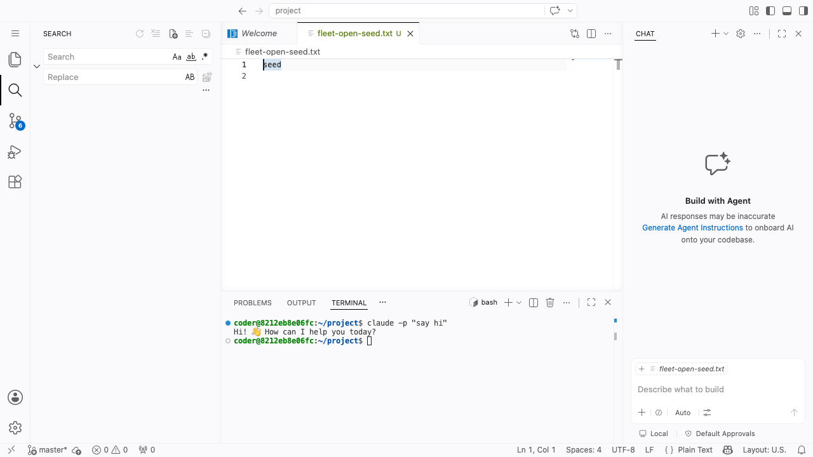
input.terminalTextEmpty base PASS — terminalText source="", no phantom "$ " cmd: true
{"procs":"10→12","memMiB":41,"fsChanges":69,"diskMiB":0,"netBytes":{"rx":124000,"tx":200000}}{"effect":8627}{
"name": "bash",
"text": "",
"source": ""
}view.showExplorer base PASS — workbench.view.explorer resolved; visibleEditors unchanged
{"procs":"11→11","memMiB":0,"fsChanges":120,"diskMiB":0,"netBytes":{"rx":10000,"tx":0}}{"effect":12146}{
"before": [
"/home/coder/project/fleet-open-seed.txt"
],
"after": [
"/home/coder/project/fleet-open-seed.txt"
]
}
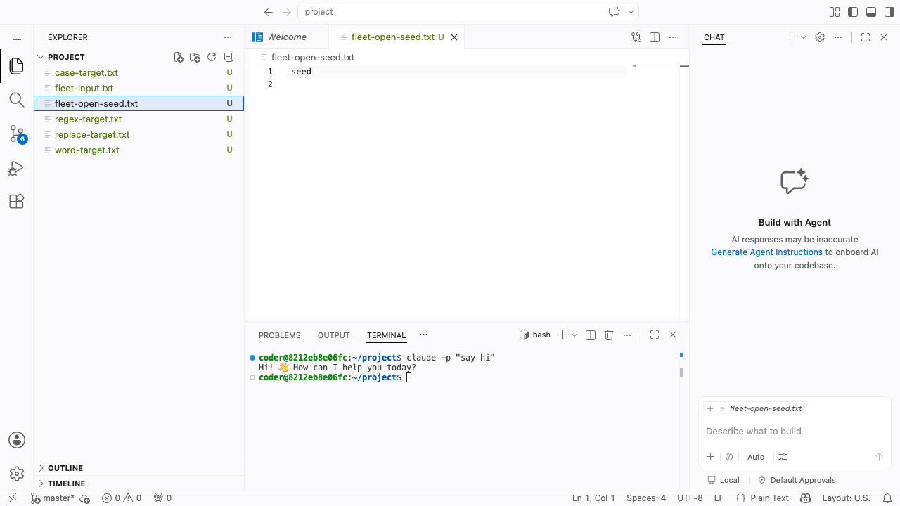
input.termSendNonBlocking base PASS — termSend reply 1ms (want <2500), query-during=true, SLEPT_DONE seen=true
{"procs":"9→11","memMiB":52,"fsChanges":64,"diskMiB":0,"netBytes":{"rx":132000,"tx":190000}}{"effect":16114}{
"replyMs": 1,
"queryOk": true,
"terminal": "bash",
"tail": "$ sleep 5 && echo SLEPT_DONE\n$ sleep 5 && echo SLEPT_DONE\n\u001b]633;C\u0007SLEPT_DONE\r\n"
}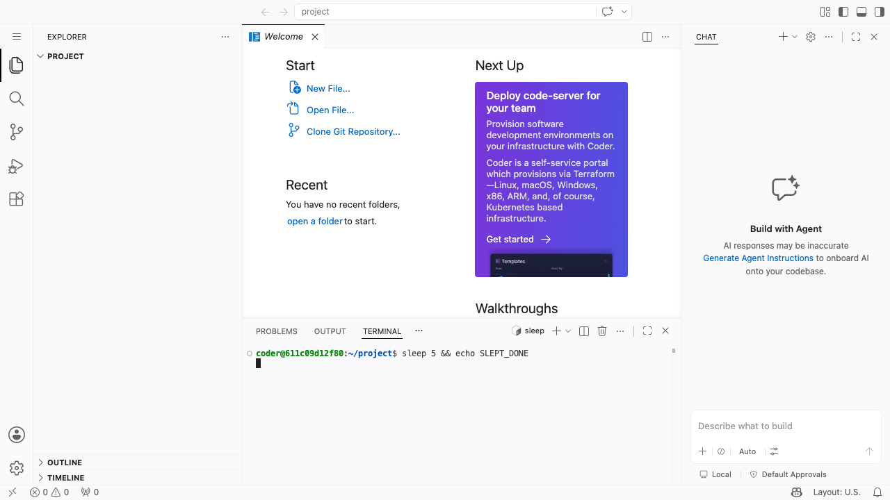
view.showSearch base PASS — workbench.view.search resolved; visibleEditors unchanged
{"procs":"11→11","memMiB":0,"fsChanges":120,"diskMiB":0,"netBytes":{"rx":0,"tx":0}}{"effect":8181}{
"before": [
"/home/coder/project/fleet-open-seed.txt"
],
"after": [
"/home/coder/project/fleet-open-seed.txt"
]
}
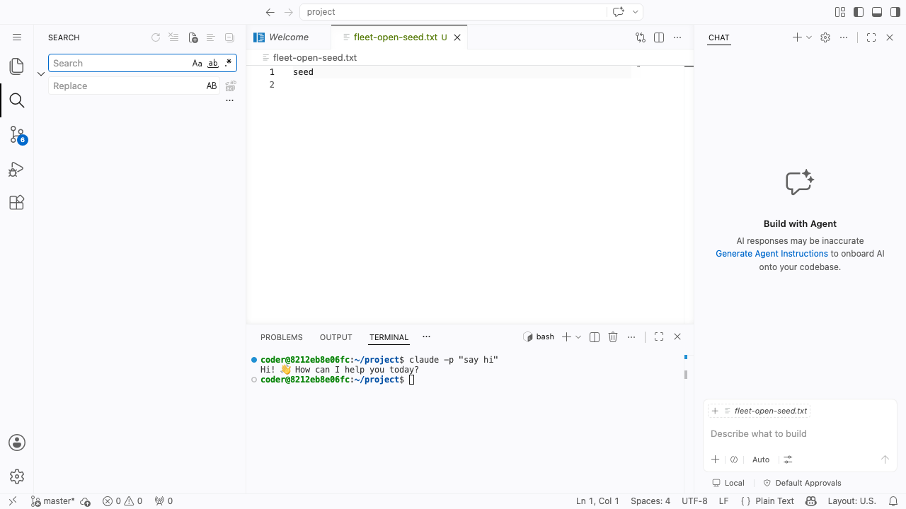
input.typeTextAccumulates base PASS — three typeText "X" → "XXX" (additive)
{"procs":"9→9","memMiB":1,"fsChanges":67,"diskMiB":0,"netBytes":{"rx":28000,"tx":10000}}{"effect":20202}{
"buffer": "XXX",
"disk": "XXX"
}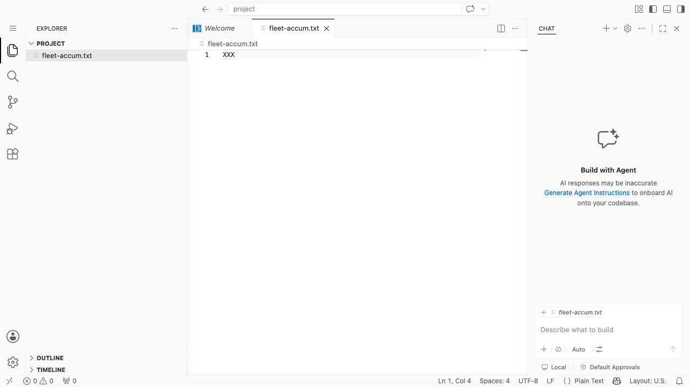
file.createDeepDir base PASS — writeFile ok:true, file on disk: true (must be true)
{"procs":"10→10","memMiB":1,"fsChanges":69,"diskMiB":0,"netBytes":{"rx":4000,"tx":0}}{"effect":4549}{
"ok": true,
"err": "",
"fileThere": true,
"parentThere": true
}view.showScm base PASS — workbench.view.scm resolved; visibleEditors unchanged
{"procs":"11→11","memMiB":0,"fsChanges":120,"diskMiB":0,"netBytes":{"rx":10000,"tx":10000}}{"effect":10186}{
"before": [
"/home/coder/project/fleet-open-seed.txt"
],
"after": [
"/home/coder/project/fleet-open-seed.txt"
]
}
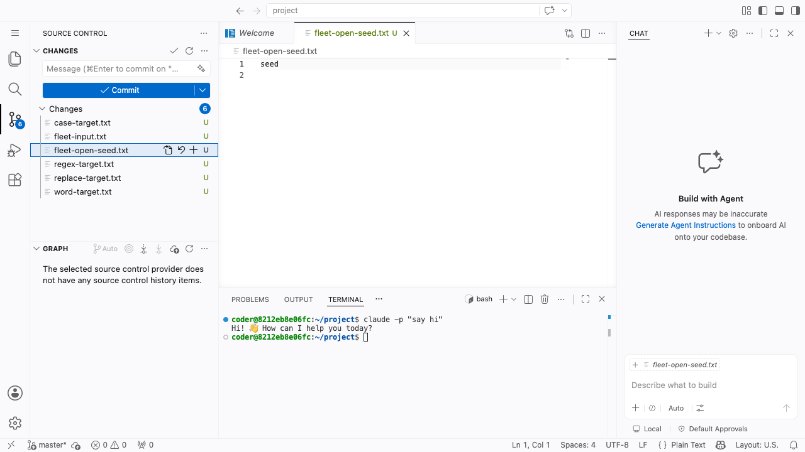

view.showExtensions base PASS — workbench.view.extensions resolved (workspace-independent)
{"procs":"11→11","memMiB":31,"fsChanges":120,"diskMiB":0,"netBytes":{"rx":0,"tx":430000}}{"effect":8170}

file.newUntitled base PASS — openTabs 1 → 2 (want +1); active="Untitled-1"
{"procs":"10→10","memMiB":5,"fsChanges":66,"diskMiB":0,"netBytes":{"rx":18000,"tx":60000}}{"effect":17646}{
"beforeTabs": [
"Welcome"
],
"afterTabs": [
"Welcome",
"Untitled-1"
]
}


view.toggleOutput base PASS — output.toggleOutput resolved; terminalCount 1 → 1 (unchanged)
{"procs":"11→11","memMiB":0,"fsChanges":120,"diskMiB":0,"netBytes":{"rx":10000,"tx":60000}}{"effect":22093}{
"beforeCount": 1,
"afterCount": 1
}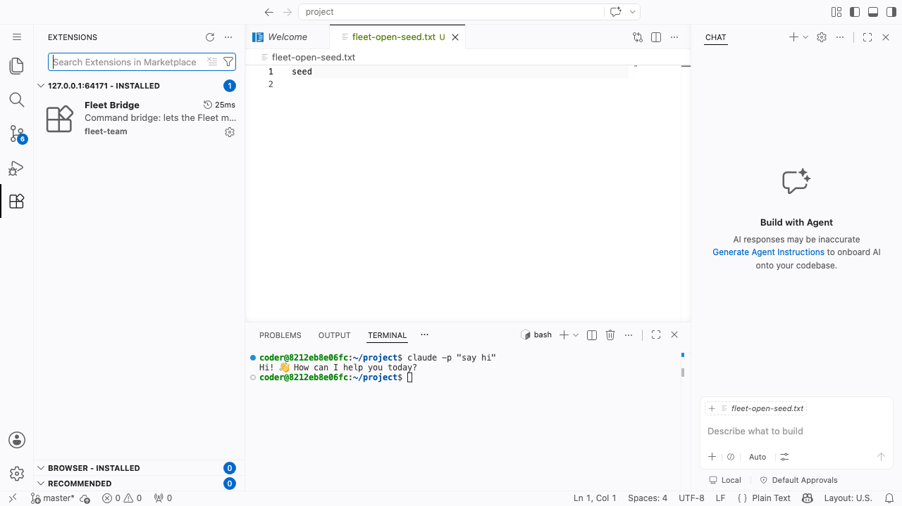

file.closeWhenEmpty base PASS — close on empty editor set was a benign no-op (openTabs stayed 0, ok)
{"procs":"10→10","memMiB":8,"fsChanges":66,"diskMiB":0,"netBytes":{"rx":23000,"tx":10000}}{"effect":28055}{
"ok": true,
"beforeN": 0,
"afterN": 0
}

editor.splitWhenEmpty base PASS — split on empty layout was benign (ok; visibleEditors 0→0, no regression)
{"procs":"10→10","memMiB":7,"fsChanges":66,"diskMiB":0,"netBytes":{"rx":19000,"tx":10000}}{"effect":26264}{
"ok": true,
"beforeVis": 0,
"afterVis": 0
}
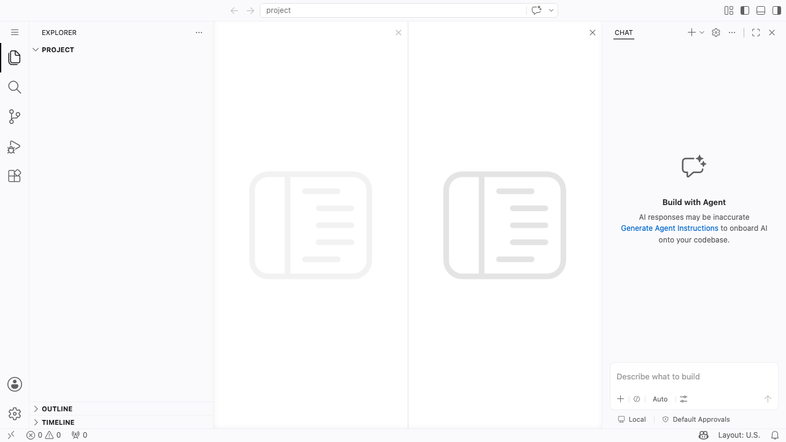
view.quickOpenCommand base PASS — quickOpen resolved; activeEditor unchanged (no pick yet)
{"procs":"11→11","memMiB":0,"fsChanges":120,"diskMiB":0,"netBytes":{"rx":10000,"tx":20000}}{"effect":20226}{
"activeBefore": "tasks",
"activeAfter": "tasks"
}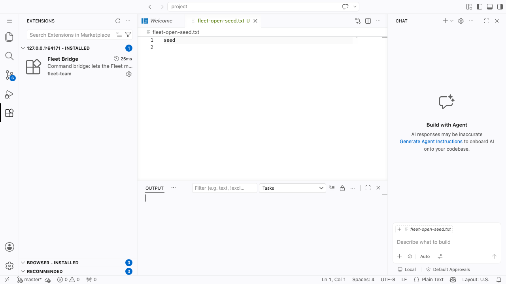
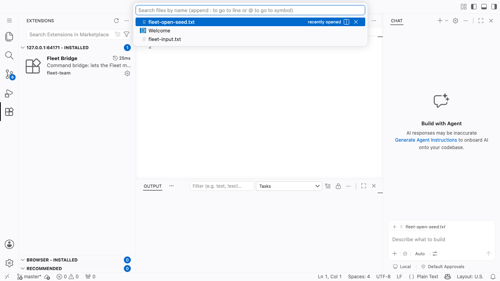

view.unknownCommandFails base PASS — unknown command id failed cleanly (ok:false) in 300ms: request failed: Error: command 'workbench.action.doesNotExist.fleet' not found
{"procs":"11→11","memMiB":0,"fsChanges":120,"diskMiB":0,"netBytes":{"rx":0,"tx":0}}{"effect":2248}{
"elapsedMs": 300,
"error": "request failed: Error: command 'workbench.action.doesNotExist.fleet' not found"
}settings.readMinimapDefault base PASS — editor.minimap.enabled read back as boolean true
{"procs":"11→11","memMiB":0,"fsChanges":120,"diskMiB":0,"netBytes":{"rx":0,"tx":0}}{"effect":1920}{
"value": true
}
editor.typeFocusRouting base PASS — marker routed ONLY into fleet-b.txt (the focused editor)
{"procs":"10→10","memMiB":6,"fsChanges":72,"diskMiB":0,"netBytes":{"rx":25000,"tx":20000}}{"effect":18020}{
"aText": "",
"bText": "ROUTED_HERE",
"marker": "ROUTED_HERE"
}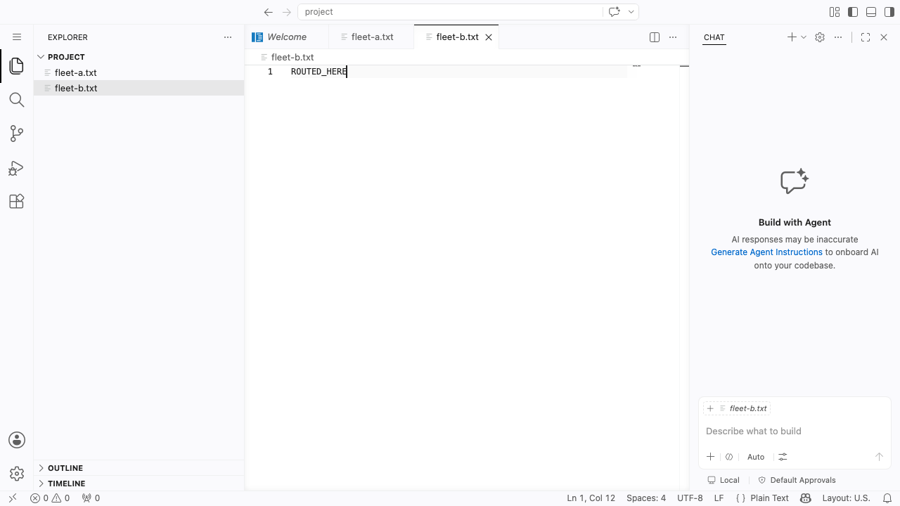
settings.readUnknownKey base PASS — unknown key read back as undefined with ok:true
{"procs":"11→11","memMiB":0,"fsChanges":120,"diskMiB":0,"netBytes":{"rx":0,"tx":10000}}{"effect":6018}settings.readEmptyKeyFails base PASS — empty key failed cleanly: request failed: Error: setting requires key
{"procs":"11→11","memMiB":0,"fsChanges":120,"diskMiB":0,"netBytes":{"rx":0,"tx":0}}{"effect":2005}{
"error": "request failed: Error: setting requires key"
}file.renameUnopened base PASS — oldGone=true newThere=true activeEditor="/home/coder/project/fleet-orphan-renamed.txt" (want fleet-orphan-renamed.txt)
{"procs":"9→9","memMiB":0,"fsChanges":62,"diskMiB":0,"netBytes":{"rx":15000,"tx":0}}{"effect":14245}{
"oldGone": true,
"newThere": true,
"activeAfter": "/home/coder/project/fleet-orphan-renamed.txt"
}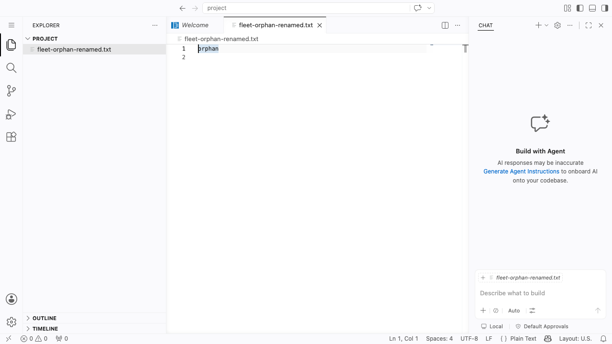
settings.minimapRoundtrip base PASS — editor.minimap.enabled true → (toggle x2) → true (round-trip ok)
{"procs":"11→12","memMiB":55,"fsChanges":129,"diskMiB":0,"netBytes":{"rx":90000,"tx":270000}}{"effect":8295}{
"before": true,
"after": true
}file.moveIntoSubdir base PASS — newThere=true oldGone=true activeEditor="/home/coder/project/sub/fleet-move.txt" (want suffix sub/fleet-move.txt)
{"procs":"10→10","memMiB":3,"fsChanges":68,"diskMiB":0,"netBytes":{"rx":11000,"tx":10000}}{"effect":8214}{
"newThere": true,
"oldGone": true,
"activeAfter": "/home/coder/project/sub/fleet-move.txt"
}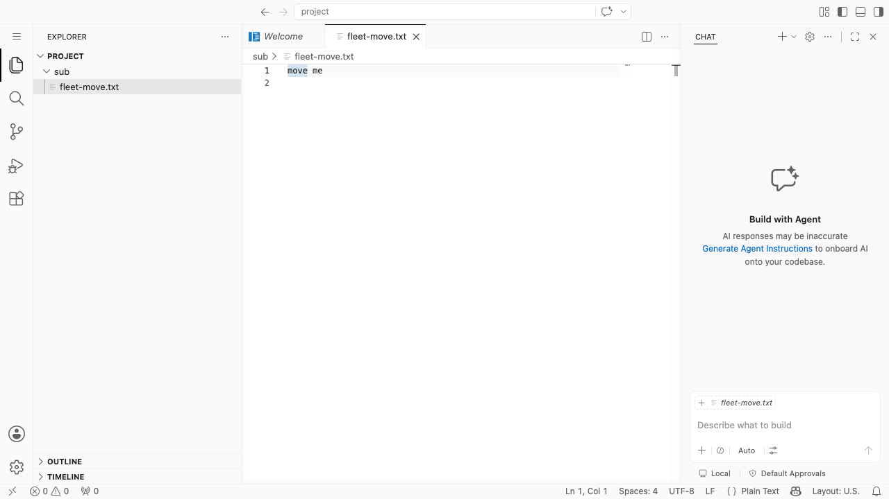
settings.toggleAutoSave base PASS — files.autoSave "afterDelay" → "off"
{"procs":"12→12","memMiB":0,"fsChanges":129,"diskMiB":0,"netBytes":{"rx":70000,"tx":10000}}{"effect":6664}{
"before": "afterDelay",
"after": "off"
}
file.deleteWhileOpen base PASS — file deleted on disk; second openFile returned a defined reply within 3s
{"procs":"9→9","memMiB":0,"fsChanges":61,"diskMiB":0,"netBytes":{"rx":11000,"tx":0}}{"effect":3724}{
"gone": true,
"replied": true,
"timedOut": false
}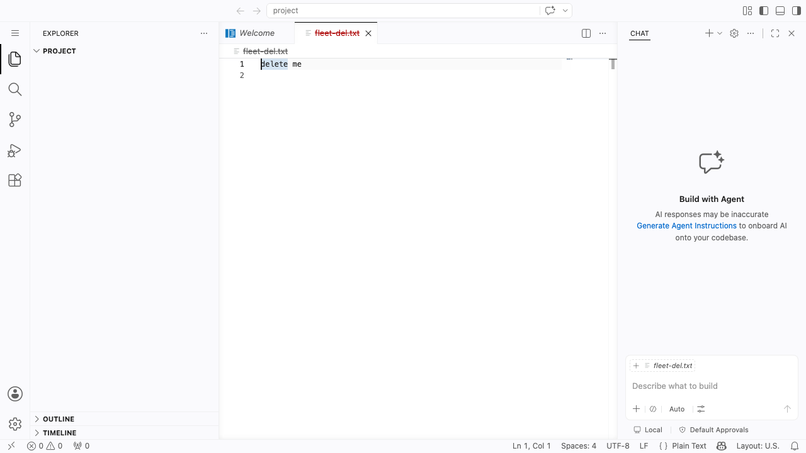
settings.autoSaveRoundtrip base PASS — files.autoSave "afterDelay" → (toggle x2) → "afterDelay" (round-trip ok)
{"procs":"12→12","memMiB":0,"fsChanges":129,"diskMiB":0,"netBytes":{"rx":80000,"tx":0}}{"effect":7091}{
"before": "afterDelay",
"after": "afterDelay"
}file.saveAllClean base PASS — saveAll on a clean workbench was a no-op (no mtime changes)
{"procs":"10→10","memMiB":2,"fsChanges":68,"diskMiB":0,"netBytes":{"rx":9000,"tx":10000}}{"effect":6680}{
"ok": true,
"mtimesUnchanged": true,
"before": "total 20\ndrwxr-xr-x 2 coder coder 4096 2026-06-09 23:16:29.938769941 +0000 .\ndrwx------ 1 coder coder 4096 2026-06-09 23:16:27.870754542 +0000 ..\n-rw-r--r-- 1 coder coder 2 2026-06-09 23:16:29.938769941 +0000 fleet-clean-a.txt\n-rw-r--r-- 1 coder coder 2 2026-06-09 23:16:29.938769941 +0000 fleet-clean-b.txt",
"after": "total 20\ndrwxr-xr-x 2 coder coder 4096 2026-06-09 23:16:29.938769941 +0000 .\ndrwx------ 1 coder coder 4096 2026-06-09 23:16:27.870754542 +0000 ..\n-rw-r--r-- 1 coder coder 2 2026-06-09 23:16:29.938769941 +0000 fleet-clean-a.txt\n-rw-r--r-- 1 coder coder 2 2026-06-09 23:16:29.938769941 +0000 fleet-clean-b.txt"
}ext.listReturns base PASS — extensions query returned 93 well-shaped {id,active} entries
{"procs":"12→12","memMiB":0,"fsChanges":129,"diskMiB":0,"netBytes":{"rx":0,"tx":0}}{"effect":1883}{
"count": 93,
"sample": [
{
"id": "vscode.bat",
"active": false
},
{
"id": "vscode.clojure",
"active": false
},
{
"id": "vscode.coffeescript",
"active": false
}
]
}file.openTwiceNoDup base PASS — 1 tab(s) reference fleet-dup.txt (want 1); active=true
{"procs":"9→9","memMiB":0,"fsChanges":62,"diskMiB":0,"netBytes":{"rx":17000,"tx":10000}}{"effect":12587}{
"refs": 1,
"openTabs": [
"Welcome",
"fleet-dup.txt"
],
"activeAfter": "/home/coder/project/fleet-dup.txt"
}
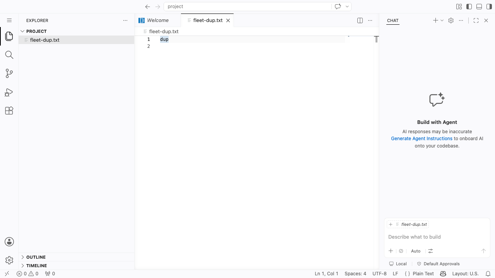
ext.fleetBridgePresent base PASS — fleet-bridge present in installed list (id=fleet-team.fleet-bridge)
{"procs":"12→12","memMiB":0,"fsChanges":129,"diskMiB":0,"netBytes":{"rx":0,"tx":10000}}{"effect":2035}{
"match": {
"id": "fleet-team.fleet-bridge",
"active": true
},
"ids": [
"vscode.bat",
"vscode.clojure",
"vscode.coffeescript",
"vscode.configuration-editing",
"vscode.cpp",
"vscode.csharp",
"vscode.css",
"vscode.css-language-features",
"vscode.dart",
"vscode.debug-auto-launch",
"vscode.debug-server-ready",
"vscode.diff",
"vscode.docker",
"vscode.dotenv",
"vscode.emmet",
"vscode.extension-editing",
"vscode.fsharp",
"vscode.git",
"vscode.git-base",
"vscode.github"
]
}ext.fleetBridgeActive base PASS — fleet-bridge (id=fleet-team.fleet-bridge) active=true
{"procs":"12→12","memMiB":0,"fsChanges":129,"diskMiB":0,"netBytes":{"rx":0,"tx":0}}{"effect":1846}{
"match": {
"id": "fleet-team.fleet-bridge",
"active": true
}
}ext.helloCaps base PASS — all 16 frozen CAPS advertised by the bridge
{"procs":"12→12","memMiB":0,"fsChanges":129,"diskMiB":0,"netBytes":{"rx":0,"tx":0}}{"effect":1658}{
"expected": [
"command",
"query",
"openFile",
"typeText",
"termSend",
"writeFile",
"saveAll",
"closeEditor",
"fileContent",
"terminalText",
"diagnostics",
"openEditors",
"setting",
"extensions",
"editorText",
"selection"
],
"missing": []
}
ext.openExtensionsView base PASS — workbench.view.extensions resolved
{"procs":"12→12","memMiB":0,"fsChanges":129,"diskMiB":0,"netBytes":{"rx":10000,"tx":0}}{"effect":5888}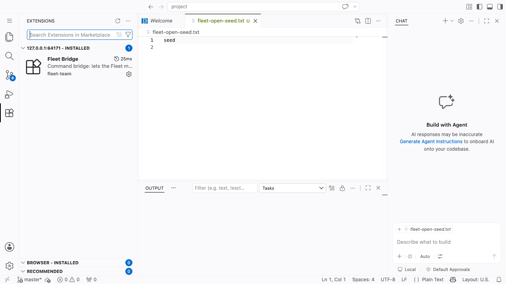
file.unicodeName base PASS — activeBasename ok=true ("/home/coder/project/fleet space ünïcode.txt"); fileContent ok=true; disk ok=true
{"procs":"10→10","memMiB":3,"fsChanges":67,"diskMiB":0,"netBytes":{"rx":11000,"tx":0}}{"effect":10004}{
"activeAfter": "/home/coder/project/fleet space ünïcode.txt",
"fileContent": "WEIRDNAME_OK\n",
"diskOk": true
}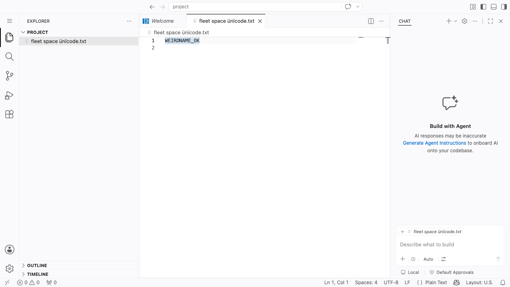
ext.shapeStableMinimal base PASS — minimal extensions list well-formed (93 entries, fleet-bridge present)
{"procs":"12→12","memMiB":0,"fsChanges":129,"diskMiB":0,"netBytes":{"rx":0,"tx":10000}}{"effect":8046}{
"count": 93,
"hasBridge": true
}git.reinit base PASS — reinit was idempotent (exit 0, still a work tree, identity preserved)
{"procs":"10→10","memMiB":4,"fsChanges":94,"diskMiB":0.1,"netBytes":{"rx":5000,"tx":0}}{"effect":2114}{
"exit": "0",
"inTree": "true",
"email": "eval@fleet.local"
}file.mountParity base PASS — bridge-written bytes are byte-identical in the container shell (same mount)
{"procs":"10→10","memMiB":3,"fsChanges":67,"diskMiB":0,"netBytes":{"rx":8000,"tx":0}}{"effect":10009}{
"shellRead": "MOUNT_OK"
}ext.bridgeLogActivation base PASS — bridge log records activation (activate: + ws/hello) at /tmp/fleet-mux/bridge-r1-base.log
{"procs":"12→12","memMiB":0,"fsChanges":129,"diskMiB":0,"netBytes":{"rx":0,"tx":10000}}{"effect":4398}{
"logPath": "/tmp/fleet-mux/bridge-r1-base.log",
"activate": true,
"connect": true,
"tail": "16:32.407Z command recv: workbench.action.toggleAutoSave\n2026-06-09T23:16:32.442Z command ok: workbench.action.toggleAutoSave\n2026-06-09T23:17:00.606Z command recv: workbench.view.extensions\n2026-06-09T23:17:00.616Z command ok: workbench.view.extensions\n2026-06-09T23:17:01.018Z query recv: reqId=263"
}ext.bridgeLogCommand base PASS — bridge log records 'workbench.action.showCommands' recv + ok
{"procs":"12→12","memMiB":0,"fsChanges":129,"diskMiB":0,"netBytes":{"rx":0,"tx":0}}{"effect":2635}{
"logPath": "/tmp/fleet-mux/bridge-r1-base.log",
"recv": true,
"ok": true,
"tail": "ction.toggleAutoSave\n2026-06-09T23:16:32.442Z command ok: workbench.action.toggleAutoSave\n2026-06-09T23:17:00.606Z command recv: workbench.view.extensions\n2026-06-09T23:17:00.616Z command ok: workbench.view.extensions\n2026-06-09T23:17:01.018Z query recv: reqId=263\n2026-06-09T23:17:26.671Z command recv: workbench.action.showCommands\n2026-06-09T23:17:26.690Z command ok: workbench.action.showCommands"
}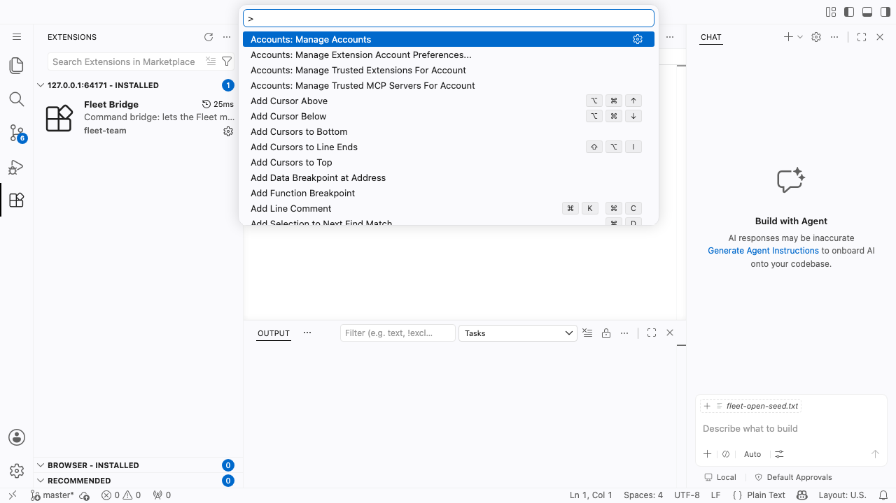
terminal.new base PASS — terminals 1 → 2 (["bash","bash"])
{"procs":"12→13","memMiB":3,"fsChanges":130,"diskMiB":0,"netBytes":{"rx":10000,"tx":10000}}{"effect":7974}{
"before": {
"terminalCount": 1,
"terminals": [
"bash"
]
},
"after": {
"terminalCount": 2,
"terminals": [
"bash",
"bash"
]
}
}
scm.openViewNoRepo base PASS — SCM view opened in a non-repo workspace (scmChanges=undefined)
{"procs":"9→9","memMiB":1,"fsChanges":61,"diskMiB":0,"netBytes":{"rx":11000,"tx":0}}{"effect":13708}{
"ok": true,
"scmChanges": null
}git.diffHunk base PASS — git diff shows exactly b→B-CHANGED; a and c untouched
{"procs":"10→11","memMiB":8,"fsChanges":109,"diskMiB":0.2,"netBytes":{"rx":18000,"tx":10000}}{"effect":6724}{
"diff": "diff --git a/diff-me.txt b/diff-me.txt\nindex de98044..b726652 100644\n--- a/diff-me.txt\n+++ b/diff-me.txt\n@@ -2 +2 @@ a\n-b\n+B-CHANGED",
"minus": [
"-b"
],
"plus": [
"+B-CHANGED"
]
}git.untrackedChange base PASS — untracked-new.txt surfaced as an untracked change ("?? untracked-new.txt")
{"procs":"10→11","memMiB":9,"fsChanges":110,"diskMiB":0.2,"netBytes":{"rx":20000,"tx":10000}}{"effect":6232}{
"cleanBefore": true,
"porcelain": "?? untracked-new.txt",
"lineCount": 1
}terminal.runEcho base PASS — terminalText contains "FLEET_OK" after echo (terminal "bash")
{"procs":"13→14","memMiB":3,"fsChanges":131,"diskMiB":0,"netBytes":{"rx":10000,"tx":10000}}{"effect":14403}{
"marker": "FLEET_OK",
"terminal": "bash",
"tail": "p \"say hi\"\n\n$ claude -p \"say hi\"\n\u001b]633;C\u0007Hi! 👋 How can I help you today?\r\n\u001b[?1006l\u001b[?1003l\u001b[?1002l\u001b[?1000l\u001b(B\u000f\u001b[>4m\u001b[<u\u001b[?1004l\u001b[?2031l\u001b[?2004l\u001b[?25h\u001b7\u001b[r\u001b8\u001b]0;\u0007\u001b[?25h$ echo FLEET_OK\n$ echo FLEET_OK\n"
}
view.toggleSidebar base PASS — toggleSidebarVisibility resolved (visibility not yet in Snapshot)
{"procs":"14→14","memMiB":0,"fsChanges":131,"diskMiB":0,"netBytes":{"rx":10000,"tx":10000}}{"effect":7085}{
"beforeVisibleEditors": [
"/home/coder/project/fleet-open-seed.txt"
],
"afterVisibleEditors": [
"/home/coder/project/fleet-open-seed.txt"
]
}view.togglePanel base PASS — togglePanel resolved (terminalCount 3 → 3, unchanged by hide)
{"procs":"14→14","memMiB":1,"fsChanges":131,"diskMiB":0,"netBytes":{"rx":0,"tx":0}}{"effect":8644}{
"beforeTerminalCount": 3,
"afterTerminalCount": 3
}git.mergeConflict base PASS — merge conflicted (UU + markers), then resolved to a clean tree (no markers, losing side gone)
{"procs":"9→13","memMiB":3,"fsChanges":130,"diskMiB":0.3,"netBytes":{"rx":24000,"tx":10000}}{"effect":6543}{
"midStatus": "UU conflict.txt",
"conflicted": true,
"hasMarkers": true,
"headBefore": 2,
"headAfter": 4,
"cleanAfter": "",
"finalContent": "RESOLVED\nshared"
}problems.open base PASS — Problems view opened (diagnostics: 0)
{"procs":"14→14","memMiB":0,"fsChanges":131,"diskMiB":0,"netBytes":{"rx":10000,"tx":10000}}{"effect":8234}{
"diagnostics": 0
}git.outsideRepo base PASS — file at /tmp/outside.txt did not appear in the repo's git status (tree stayed clean)
{"procs":"10→11","memMiB":8,"fsChanges":110,"diskMiB":0.2,"netBytes":{"rx":20000,"tx":10000}}{"effect":7723}{
"cleanBefore": true,
"porcelain": "",
"mentionsOutside": false
}git.mergeClean base PASS — clean merge: feat.txt present, tree clean, no conflict markers
{"procs":"9→12","memMiB":5,"fsChanges":114,"diskMiB":0.2,"netBytes":{"rx":24000,"tx":20000}}{"effect":10094}{
"clean": "",
"featThere": true,
"noMarkers": true
}settings.toggleMinimap base PASS — editor.minimap.enabled true → false
{"procs":"14→14","memMiB":1,"fsChanges":132,"diskMiB":0,"netBytes":{"rx":40000,"tx":10000}}{"effect":6824}{
"before": true,
"after": false
}visual.workbenchTabSmoke base PASS — workbench visible with 3 tab(s); screenshot 1280x720, blackish=0.0003, buckets=105
{"procs":"14→14","memMiB":0,"fsChanges":133,"diskMiB":0,"netBytes":{"rx":0,"tx":10000}}{"effect":4504}{
"screenshot": "artifacts/r1-base-visual.workbenchTabSmoke.full.png",
"tabCount": 3,
"activityBarCount": 1,
"editorCount": 1,
"statusBarCount": 1,
"stats": {
"decoded": true,
"width": 1280,
"height": 720,
"blackishRatio": 0.0003,
"lightRatio": 0.9869,
"colorBuckets": 105
}
}
life.inspectUrlReachable base PASS — inspect HostPort=49360 == env.port=49360; http://127.0.0.1:49360/ → 302
{"procs":"10→10","memMiB":1,"fsChanges":66,"diskMiB":0,"netBytes":{"rx":3000,"tx":0}}{"effect":2048}{
"hostPort": "49360",
"envPort": 49360,
"url": "http://127.0.0.1:49360/",
"httpCode": "302"
}
net.publishedPortReachable base PASS — http://127.0.0.1:49364/ → 302; docker port → "0.0.0.0:49364\n[::]:49364"
{"procs":"9→9","memMiB":0,"fsChanges":61,"diskMiB":0,"netBytes":{"rx":3000,"tx":0}}{"effect":1870}{
"url": "http://127.0.0.1:49364/",
"httpCode": "302",
"dockerPort": "0.0.0.0:49364\n[::]:49364",
"envPort": 49364
}
git.commitClearsChanges base PASS — committed; tree clean, commits 1→2
{"procs":"9→11","memMiB":6,"fsChanges":111,"diskMiB":0.2,"netBytes":{"rx":28000,"tx":10000}}{"effect":15311}{
"dirtyBefore": "M tracked.txt",
"cleanAfter": "",
"headBefore": 1,
"headAfter": 2,
"snapshotScmChanges": null
}
flow.cancelBeforeDebounce base PASS — Hub session "r1-base-f58" never reached "waiting" after a PreToolUse cancelled by a prompt Stop (states: idle)
{"procs":"9→9","memMiB":0,"fsChanges":61,"diskMiB":0,"netBytes":{"rx":17000,"tx":0}}{"effect":10589}{
"sessionTitle": "r1-base-f58",
"startState": "idle",
"statesSeen": [
"idle"
],
"finalLine": "[idle] r1-base-f58 (1 run)"
}
search.replaceAllNoMatch base PASS — no-match replace left file byte-identical
{"procs":"10→10","memMiB":2,"fsChanges":67,"diskMiB":0,"netBytes":{"rx":13000,"tx":0}}{"effect":6835}{
"seededOk": true,
"original": "nothing to find here\nstill nothing\n",
"after": "nothing to find here\nstill nothing\n"
}flow.secondRunMergesSession base PASS — Hub session "r1-base-f59" merged a second run: runs 1→2 in ONE row
{"procs":"9→12","memMiB":189,"fsChanges":85,"diskMiB":0.1,"netBytes":{"rx":767000,"tx":500000}}{"effect":10357}{
"sessionTitle": "r1-base-f59",
"countAfterFirst": 1,
"countAfterSecond": 2,
"rowsForEnv": 1,
"afterFirst": "[dead] r1-base-f59 (1 run)",
"afterSecond": "[working] r1-base-f59 (2 runs)",
"statesRun1": [
"working",
"dead"
],
"statesRun2": [
"dead"
]
}search.editorFind base PASS — actions.find resolved; activeEditor stayed on find-here.txt
{"procs":"10→10","memMiB":4,"fsChanges":67,"diskMiB":0,"netBytes":{"rx":22000,"tx":10000}}{"effect":12877}{
"activeBefore": "/home/coder/project/find-here.txt",
"activeAfter": "/home/coder/project/find-here.txt"
}
search.addNextOccurrence base PASS — addSelectionToNextFindMatch resolved (multi-cursor count not in snapshot)
{"procs":"9→9","memMiB":2,"fsChanges":63,"diskMiB":0,"netBytes":{"rx":24000,"tx":20000}}{"effect":8954}{
"file": "multi.txt"
}search.gotoSymbolEditor base PASS — gotoSymbol resolved; activeEditor stayed on syms.txt
{"procs":"9→9","memMiB":8,"fsChanges":63,"diskMiB":0,"netBytes":{"rx":13000,"tx":10000}}{"effect":17049}{
"activeBefore": "/home/coder/project/syms.txt",
"activeAfter": "/home/coder/project/syms.txt"
}search.editorFindReplace base PASS — startFindReplaceAction resolved; activeEditor stayed on replace-here.txt
{"procs":"9→9","memMiB":9,"fsChanges":62,"diskMiB":0,"netBytes":{"rx":17000,"tx":10000}}{"effect":22598}{
"activeBefore": "/home/coder/project/replace-here.txt",
"activeAfter": "/home/coder/project/replace-here.txt"
}
diag.quickFixNoActions base PASS — quickFix resolved with no actions; env still responsive
{"procs":"10→10","memMiB":5,"fsChanges":68,"diskMiB":0,"netBytes":{"rx":13000,"tx":10000}}{"effect":16651}{
"threw": false,
"responsive": true,
"diagnostics": 0
}diag.jsonError base PASS — bad.json has 1 built-in JSON diagnostic(s) (sev present)
{"procs":"10→10","memMiB":2,"fsChanges":68,"diskMiB":0,"netBytes":{"rx":14000,"tx":90000}}{"effect":8630}{
"items": [
{
"file": "/home/coder/project/bad.json",
"sev": "error",
"msg": "Trailing comma",
"line": 0
}
]
}diag.formatNoFormatter base PASS — formatDocument resolved; content unchanged (no formatter)
{"procs":"10→10","memMiB":3,"fsChanges":68,"diskMiB":0,"netBytes":{"rx":10000,"tx":0}}{"effect":10564}{
"threw": false,
"before": "a b c\n",
"after": "a b c\n"
}diag.jsonClears base PASS — JSON diagnostic cleared after fixing the trailing comma
{"procs":"10→10","memMiB":6,"fsChanges":68,"diskMiB":0,"netBytes":{"rx":18000,"tx":90000}}{"effect":12541}{
"hadInitial": 1,
"afterFix": []
}diag.countMatchesItems base PASS — snapshot.diagnostics (1) === detailed items (1)
{"procs":"10→10","memMiB":3,"fsChanges":68,"diskMiB":0,"netBytes":{"rx":12000,"tx":90000}}{"effect":8580}{
"snapCount": 1,
"itemsLen": 1,
"fileMarkers": 1
}diag.problemsEmpty base PASS — Problems view opened on an empty workspace; diagnostics stayed 0
{"procs":"10→10","memMiB":9,"fsChanges":67,"diskMiB":0,"netBytes":{"rx":13000,"tx":10000}}{"effect":22040}{
"before": 0,
"after": 0
}
terminal.splitFromEmpty base PASS — fresh 0 → split resolved ok=true; count=0 (graceful no-op, no throw/hang)
{"procs":"9→9","memMiB":0,"fsChanges":62,"diskMiB":0,"netBytes":{"rx":10000,"tx":0}}{"effect":18325}{
"commandOk": true,
"after": 0
}


terminal.newExactlyOne base PASS — fresh 0 → count=1, terminals.length=1 (want 1/1)
{"procs":"9→11","memMiB":57,"fsChanges":64,"diskMiB":0,"netBytes":{"rx":130000,"tx":200000}}{"effect":24351}{
"before": 0,
"after": {
"terminalCount": 1,
"terminals": [
"bash"
]
}
}

terminal.newAccumulates base PASS — fresh 0 → count=3, terminals.length=3 after 3×New (want 3/3)
{"procs":"10→14","memMiB":69,"fsChanges":71,"diskMiB":0,"netBytes":{"rx":139000,"tx":210000}}{"effect":27672}{
"after": {
"terminalCount": 3,
"terminals": [
"bash",
"bash",
"bash"
]
}
}
terminal.killEmpty base PASS — count 0→0 after kill; bridge responsive=true
{"procs":"10→10","memMiB":43,"fsChanges":67,"diskMiB":0,"netBytes":{"rx":10000,"tx":10000}}{"effect":16005}{
"before": 0,
"after": 0,
"responsive": true
}


terminal.splitTwice base PASS — count=3 after New+Split+Split (want 3)
{"procs":"10→14","memMiB":55,"fsChanges":71,"diskMiB":0,"netBytes":{"rx":134000,"tx":200000}}{"effect":18379}{
"terminalCount": 3,
"terminals": [
"bash",
"bash",
"bash"
]
}terminal.killOneOfThree base PASS — count 3→2 after one kill (want 3→2)
{"procs":"10→13","memMiB":53,"fsChanges":70,"diskMiB":0,"netBytes":{"rx":139000,"tx":200000}}{"effect":24644}{
"before": 3,
"after": 2
}terminal.killAll base PASS — count 3→0 after killAll (want 3→0)
{"procs":"10→11","memMiB":51,"fsChanges":68,"diskMiB":0,"netBytes":{"rx":138000,"tx":210000}}{"effect":22201}{
"before": 3,
"after": 0
}terminal.textEmptyClean base PASS — terminalText ok=true source="" textLen=0
{"procs":"10→12","memMiB":49,"fsChanges":69,"diskMiB":0,"netBytes":{"rx":119000,"tx":200000}}{"effect":4060}{
"ok": true,
"source": "",
"sample": ""
}terminal.exitCode base PASS — file contains rc=1
{"procs":"10→15","memMiB":53,"fsChanges":70,"diskMiB":0,"netBytes":{"rx":125000,"tx":200000}}{"effect":11797}{
"path": "/tmp/fleet-rc.txt",
"got": "rc=1"
}terminal.runToFile base PASS — file contains fleet-run-OK
{"procs":"10→12","memMiB":49,"fsChanges":70,"diskMiB":0,"netBytes":{"rx":127000,"tx":200000}}{"effect":16416}{
"path": "/tmp/fleet-run.txt",
"got": "fleet-run-OK"
}terminal.chainedCommand base PASS — file has /tmp and done
{"procs":"10→12","memMiB":49,"fsChanges":70,"diskMiB":0,"netBytes":{"rx":128000,"tx":200000}}{"effect":16176}{
"path": "/tmp/fleet-chain.txt",
"got": "/tmp\ndone"
}
terminal.focusActiveEcho base PASS — marker landed in active terminal "bash"
{"procs":"9→11","memMiB":46,"fsChanges":64,"diskMiB":0,"netBytes":{"rx":126000,"tx":190000}}{"effect":15992}{
"focusOk": true,
"terminal": "bash",
"tail": "$ echo FLEET_FOCUSED\n$ echo FLEET_FOCUSED\n"
}terminal.clearKeepsCount base PASS — count 1→1 after clear (want 1→1)
{"procs":"10→12","memMiB":50,"fsChanges":69,"diskMiB":0,"netBytes":{"rx":127000,"tx":200000}}{"effect":19990}{
"before": 1,
"after": 1
}
terminal.snapshotNames base PASS — terminalCount=3 terminals.length=3 names=["bash","bash","bash"]
{"procs":"10→14","memMiB":66,"fsChanges":71,"diskMiB":0,"netBytes":{"rx":138000,"tx":210000}}{"effect":25680}{
"terminalCount": 3,
"terminals": [
"bash",
"bash",
"bash"
]
}terminal.togglePanel base PASS — toggles ok=true; count 1→1 (want 1→1)
{"procs":"9→11","memMiB":49,"fsChanges":64,"diskMiB":0,"netBytes":{"rx":129000,"tx":200000}}{"effect":21985}{
"commandsOk": true,
"before": 1,
"after": 1
}

terminal.buildNoTasks base PASS — responsive=true; terminalCount 0→0 (want unchanged)
{"procs":"10→10","memMiB":27,"fsChanges":67,"diskMiB":0,"netBytes":{"rx":24000,"tx":40000}}{"effect":16027}{
"responsive": true,
"before": 0,
"after": 0
}
terminal.badProfileBounded base PASS — responsive=true; terminalCount=0 (want 0 or 1)
{"procs":"10→10","memMiB":3,"fsChanges":67,"diskMiB":0,"netBytes":{"rx":8000,"tx":0}}{"effect":12038}{
"responsive": true,
"count": 0
}

terminal.defaultProfileBash base PASS — default shell is bash ("/bin/bash-5.2.37(1)-release")
{"procs":"10→12","memMiB":52,"fsChanges":70,"diskMiB":0,"netBytes":{"rx":130000,"tx":200000}}{"effect":19730}{
"path": "/tmp/fleet-shell.txt",
"got": "/bin/bash-5.2.37(1)-release"
}terminal.killThenRecreate base PASS — count 1→0(kill)→1(recreate) (want 1→0→1)
{"procs":"9→11","memMiB":49,"fsChanges":64,"diskMiB":0,"netBytes":{"rx":137000,"tx":200000}}{"effect":31858}{
"opened": 1,
"killed": 0,
"after": 1
}view.panelKeepsTerminalIdentity base PASS — terminalCount 1 → 1 (want 1→1); terminal identity preserved
{"procs":"9→11","memMiB":42,"fsChanges":64,"diskMiB":0,"netBytes":{"rx":127000,"tx":190000}}{"effect":20407}{
"beforeTerminals": [
"bash"
],
"afterTerminals": [
"bash"
],
"beforeCount": 1,
"afterCount": 1
}view.toggleTerminalHidesOne base PASS — terminalCount 1 → 1 (want 1→1; toggle only hides, does not dispose)
{"procs":"10→12","memMiB":49,"fsChanges":68,"diskMiB":0,"netBytes":{"rx":128000,"tx":200000}}{"effect":20439}{
"beforeCount": 1,
"afterCount": 1
}view.toggleTerminalFromZero base PASS — terminalCount 0 → 1 (want 0→1; toggle-from-zero creates one)
{"procs":"10→12","memMiB":50,"fsChanges":68,"diskMiB":0,"netBytes":{"rx":127000,"tx":200000}}{"effect":20460}{
"beforeCount": 0,
"afterCount": 1
}
view.newUntitledFile base PASS — openTabs 1 → 2 (delta 1, want +1)
{"procs":"10→10","memMiB":4,"fsChanges":67,"diskMiB":0,"netBytes":{"rx":13000,"tx":60000}}{"effect":14113}{
"beforeTabs": [
"Welcome"
],
"afterTabs": [
"Welcome",
"Untitled-1"
]
}

view.gotoLineWithEditor base PASS — gotoLine resolved with an editor open; activeEditor unchanged
{"procs":"9→9","memMiB":7,"fsChanges":63,"diskMiB":0,"netBytes":{"rx":16000,"tx":10000}}{"effect":19735}{
"activeBefore": "/home/coder/project/fleet-gotoline.txt",
"activeAfter": "/home/coder/project/fleet-gotoline.txt"
}view.gotoLineNoEditor base PASS — gotoLine with no active editor resolved (no-op, did not throw)
{"procs":"10→10","memMiB":9,"fsChanges":67,"diskMiB":0,"netBytes":{"rx":15000,"tx":10000}}{"effect":21846}view.closeAfterUntitled base PASS — openTabs 2 → 1 (delta -1, want -1)
{"procs":"9→9","memMiB":0,"fsChanges":62,"diskMiB":0,"netBytes":{"rx":18000,"tx":60000}}{"effect":22847}{
"createdTabs": [
"Welcome",
"Untitled-1"
],
"afterTabs": [
"Welcome"
]
}

view.toggleZen base PASS — toggleZenMode resolved; visibleEditors stable, activeEditor stable
{"procs":"9→9","memMiB":0,"fsChanges":62,"diskMiB":0,"netBytes":{"rx":10000,"tx":10000}}{"effect":16188}{
"beforeVisible": [],
"afterVisible": [],
"beforeActive": null,
"afterActive": null
}
view.closeEditorNoEditor base PASS — closeEditor on empty editor area resolved ok; openTabs 0 → 0 (unchanged)
{"procs":"9→9","memMiB":1,"fsChanges":62,"diskMiB":0,"netBytes":{"rx":14000,"tx":10000}}{"effect":24235}{
"beforeTabs": [],
"afterTabs": []
}view.resetLayout base PASS — resetViewLocations resolved from a mutated layout; visibleEditors unchanged
{"procs":"10→12","memMiB":38,"fsChanges":69,"diskMiB":0,"netBytes":{"rx":127000,"tx":200000}}{"effect":22196}{
"before": [],
"after": []
}view.zenRoundtrip base PASS — toggleZenMode x2 resolved; visibleEditors stable, openTabs stable
{"procs":"10→10","memMiB":14,"fsChanges":67,"diskMiB":0,"netBytes":{"rx":17000,"tx":20000}}{"effect":27888}{
"beforeVisible": [],
"afterVisible": [],
"beforeTabs": [
"Welcome"
],
"afterTabs": [
"Welcome"
]
}
settings.writeSettingsJson base PASS — editor.fontSize read back as 17 after writing .vscode/settings.json
{"procs":"10→10","memMiB":6,"fsChanges":69,"diskMiB":0,"netBytes":{"rx":41000,"tx":10000}}{"effect":6694}{
"value": 17
}
settings.malformedSettingsJson base PASS — config read survived a malformed settings.json (editor.fontSize=12)
{"procs":"10→10","memMiB":1,"fsChanges":69,"diskMiB":0,"netBytes":{"rx":2000,"tx":10000}}{"effect":4332}{
"value": 12
}settings.wordWrapNotConfigBacked base PASS — editor.wordWrap config correctly UNCHANGED ("off") — toggle is a per-editor override
{"procs":"10→10","memMiB":7,"fsChanges":68,"diskMiB":0,"netBytes":{"rx":13000,"tx":10000}}{"effect":12655}{
"before": "off",
"after": "off"
}settings.toggleWordWrapNoEditor base PASS — toggleWordWrap with no active editor resolved (no-op, did not throw)
{"procs":"10→10","memMiB":3,"fsChanges":67,"diskMiB":0,"netBytes":{"rx":9000,"tx":0}}{"effect":12560}settings.readBeforeEditor base PASS — setting read with zero editors open returned boolean true
{"procs":"10→10","memMiB":2,"fsChanges":67,"diskMiB":0,"netBytes":{"rx":7000,"tx":10000}}{"effect":8521}{
"value": true
}settings.workspaceOverride base PASS — editor.tabSize effective value is the workspace override 2 (not the default 4)
{"procs":"10→10","memMiB":4,"fsChanges":69,"diskMiB":0,"netBytes":{"rx":40000,"tx":0}}{"effect":6826}{
"value": 2
}settings.toggleAndWriteAgree base PASS — editor.minimap.enabled file=false → toggle → true (flipped to !false as expected)
{"procs":"10→10","memMiB":67,"fsChanges":73,"diskMiB":0,"netBytes":{"rx":97000,"tx":100000}}{"effect":10147}{
"base": false,
"after": true
}terminal.split base PASS — terminals 1 → 2 after split (same group; ["bash","bash"])
{"procs":"10→13","memMiB":54,"fsChanges":70,"diskMiB":0,"netBytes":{"rx":129000,"tx":200000}}{"effect":15034}{
"before": {
"terminalCount": 1,
"terminals": [
"bash"
]
},
"after": {
"terminalCount": 2,
"terminals": [
"bash",
"bash"
]
}
}terminal.cwd base PASS — terminal cwd is /home/coder/project
{"procs":"10→12","memMiB":50,"fsChanges":69,"diskMiB":0,"netBytes":{"rx":134000,"tx":200000}}{"effect":33388}{
"expected": "/home/coder/project",
"got": "/home/coder/project"
}
terminal.kill base PASS — terminals 1 → 0 after kill
{"procs":"10→11","memMiB":49,"fsChanges":68,"diskMiB":0,"netBytes":{"rx":137000,"tx":200000}}{"effect":39787}{
"opened": {
"terminalCount": 1,
"terminals": [
"bash"
]
},
"after": {
"terminalCount": 0,
"terminals": []
}
}palette.open small-repo PASS — executeCommand(showCommands) returned ok
{"procs":"10→10","memMiB":3,"fsChanges":113,"diskMiB":0,"netBytes":{"rx":19000,"tx":10000}}{"effect":36634}palette.open large-repo PASS — executeCommand(showCommands) returned ok
{"procs":"10→10","memMiB":7,"fsChanges":0,"diskMiB":0,"netBytes":{"rx":0,"tx":130000}}{"effect":17380}file.openWelcomeClose small-repo PASS — openTabs 1 → 0
{"procs":"10→10","memMiB":0,"fsChanges":113,"diskMiB":0,"netBytes":{"rx":6000,"tx":10000}}{"effect":8823}{
"beforeTabs": [
"Welcome"
],
"afterTabs": []
}search.findInFiles small-repo PASS — executeCommand(findInFiles) returned ok (no view in snapshot to assert)
{"procs":"10→10","memMiB":0,"fsChanges":113,"diskMiB":0,"netBytes":{"rx":6000,"tx":0}}{"effect":8385}{
"beforeView": null,
"afterView": null
}file.openWelcomeClose large-repo PASS — openTabs 1 → 0
{"procs":"10→10","memMiB":0,"fsChanges":0,"diskMiB":0,"netBytes":{"rx":0,"tx":0}}{"effect":15495}{
"beforeTabs": [
"Welcome"
],
"afterTabs": []
}palette.open many-files PASS — executeCommand(showCommands) returned ok
{"procs":"9→9","memMiB":3,"fsChanges":5113,"diskMiB":0,"netBytes":{"rx":7000,"tx":0}}{"effect":13008}palette.open multi-root PASS — executeCommand(showCommands) returned ok
{"procs":"9→9","memMiB":0,"fsChanges":67,"diskMiB":0,"netBytes":{"rx":9000,"tx":10000}}{"effect":17042}search.findInFiles large-repo PASS — executeCommand(findInFiles) returned ok (no view in snapshot to assert)
{"procs":"10→10","memMiB":0,"fsChanges":0,"diskMiB":0,"netBytes":{"rx":0,"tx":10000}}{"effect":25382}{
"beforeView": null,
"afterView": null
}
terminal.new small-repo PASS — terminals 0 → 1 (["bash"])
{"procs":"10→12","memMiB":33,"fsChanges":115,"diskMiB":0,"netBytes":{"rx":131000,"tx":200000}}{"effect":29041}{
"before": {
"terminalCount": 0,
"terminals": []
},
"after": {
"terminalCount": 1,
"terminals": [
"bash"
]
}
}

file.openWelcomeClose many-files PASS — openTabs 1 → 0
{"procs":"9→9","memMiB":5,"fsChanges":5113,"diskMiB":0,"netBytes":{"rx":15000,"tx":10000}}{"effect":30217}{
"beforeTabs": [
"Welcome"
],
"afterTabs": []
}view.toggleSidebar small-repo PASS — toggleSidebarVisibility resolved (visibility not yet in Snapshot)
{"procs":"12→12","memMiB":2,"fsChanges":115,"diskMiB":0,"netBytes":{"rx":10000,"tx":0}}{"effect":18717}{
"beforeVisibleEditors": [],
"afterVisibleEditors": []
}file.openWelcomeClose multi-root PASS — openTabs 1 → 0
{"procs":"9→9","memMiB":8,"fsChanges":67,"diskMiB":0,"netBytes":{"rx":14000,"tx":10000}}{"effect":28568}{
"beforeTabs": [
"Welcome"
],
"afterTabs": []
}
terminal.new large-repo PASS — terminals 0 → 1 (["bash"])
{"procs":"10→12","memMiB":-3,"fsChanges":0,"diskMiB":0,"netBytes":{"rx":0,"tx":190000}}{"effect":19459}{
"before": {
"terminalCount": 0,
"terminals": []
},
"after": {
"terminalCount": 1,
"terminals": [
"bash"
]
}
}view.togglePanel small-repo PASS — togglePanel resolved (terminalCount 1 → 1, unchanged by hide)
{"procs":"12→12","memMiB":0,"fsChanges":115,"diskMiB":0,"netBytes":{"rx":11000,"tx":10000}}{"effect":21933}{
"beforeTerminalCount": 1,
"afterTerminalCount": 1
}
search.findInFiles multi-root PASS — executeCommand(findInFiles) returned ok (no view in snapshot to assert)
{"procs":"9→9","memMiB":4,"fsChanges":67,"diskMiB":0,"netBytes":{"rx":11000,"tx":10000}}{"effect":24059}{
"beforeView": null,
"afterView": null
}
search.findInFiles many-files PASS — executeCommand(findInFiles) returned ok (no view in snapshot to assert)
{"procs":"9→9","memMiB":0,"fsChanges":5113,"diskMiB":0,"netBytes":{"rx":14000,"tx":10000}}{"effect":28004}{
"beforeView": null,
"afterView": null
}

view.toggleSidebar large-repo PASS — toggleSidebarVisibility resolved (visibility not yet in Snapshot)
{"procs":"12→12","memMiB":2,"fsChanges":0,"diskMiB":0,"netBytes":{"rx":0,"tx":10000}}{"effect":24007}{
"beforeVisibleEditors": [],
"afterVisibleEditors": []
}problems.open small-repo PASS — Problems view opened (diagnostics: 0)
{"procs":"12→12","memMiB":1,"fsChanges":115,"diskMiB":0,"netBytes":{"rx":9000,"tx":10000}}{"effect":18025}{
"diagnostics": 0
}
terminal.new multi-root PASS — terminals 0 → 1 (["bash"])
{"procs":"9→11","memMiB":37,"fsChanges":69,"diskMiB":0,"netBytes":{"rx":130000,"tx":200000}}{"effect":29509}{
"before": {
"terminalCount": 0,
"terminals": []
},
"after": {
"terminalCount": 1,
"terminals": [
"bash"
]
}
}view.togglePanel large-repo PASS — togglePanel resolved (terminalCount 1 → 1, unchanged by hide)
{"procs":"12→12","memMiB":0,"fsChanges":0,"diskMiB":0,"netBytes":{"rx":0,"tx":10000}}{"effect":20383}{
"beforeTerminalCount": 1,
"afterTerminalCount": 1
}
terminal.new many-files PASS — terminals 0 → 1 (["bash"])
{"procs":"9→11","memMiB":36,"fsChanges":5115,"diskMiB":0,"netBytes":{"rx":131000,"tx":200000}}{"effect":31174}{
"before": {
"terminalCount": 0,
"terminals": []
},
"after": {
"terminalCount": 1,
"terminals": [
"bash"
]
}
}settings.toggleMinimap small-repo PASS — editor.minimap.enabled true → false
{"procs":"12→12","memMiB":12,"fsChanges":120,"diskMiB":0,"netBytes":{"rx":64000,"tx":110000}}{"effect":23534}{
"before": true,
"after": false
}problems.open large-repo PASS — Problems view opened (diagnostics: 0)
{"procs":"12→12","memMiB":0,"fsChanges":0,"diskMiB":0,"netBytes":{"rx":0,"tx":0}}{"effect":14828}{
"diagnostics": 0
}view.toggleSidebar many-files PASS — toggleSidebarVisibility resolved (visibility not yet in Snapshot)
{"procs":"11→11","memMiB":1,"fsChanges":5115,"diskMiB":0,"netBytes":{"rx":10000,"tx":10000}}{"effect":14875}{
"beforeVisibleEditors": [],
"afterVisibleEditors": []
}view.toggleSidebar multi-root PASS — toggleSidebarVisibility resolved (visibility not yet in Snapshot)
{"procs":"11→11","memMiB":1,"fsChanges":69,"diskMiB":0,"netBytes":{"rx":13000,"tx":10000}}{"effect":25333}{
"beforeVisibleEditors": [],
"afterVisibleEditors": []
}visual.workbenchTabSmoke small-repo PASS — workbench visible with 1 tab(s); screenshot 1280x720, blackish=0.0003, buckets=101
{"procs":"12→12","memMiB":1,"fsChanges":121,"diskMiB":0,"netBytes":{"rx":20000,"tx":10000}}{"effect":25310}{
"screenshot": "artifacts/r2-small-repo-visual.workbenchTabSmoke.full.png",
"tabCount": 1,
"activityBarCount": 1,
"editorCount": 1,
"statusBarCount": 1,
"stats": {
"decoded": true,
"width": 1280,
"height": 720,
"blackishRatio": 0.0003,
"lightRatio": 0.9879,
"colorBuckets": 101
}
}settings.toggleMinimap large-repo PASS — editor.minimap.enabled true → false
{"procs":"12→12","memMiB":5,"fsChanges":0,"diskMiB":0,"netBytes":{"rx":0,"tx":110000}}{"effect":14865}{
"before": true,
"after": false
}view.togglePanel many-files PASS — togglePanel resolved (terminalCount 1 → 1, unchanged by hide)
{"procs":"11→11","memMiB":1,"fsChanges":5115,"diskMiB":0,"netBytes":{"rx":7000,"tx":10000}}{"effect":18542}{
"beforeTerminalCount": 1,
"afterTerminalCount": 1
}view.togglePanel multi-root PASS — togglePanel resolved (terminalCount 1 → 1, unchanged by hide)
{"procs":"11→11","memMiB":1,"fsChanges":69,"diskMiB":0,"netBytes":{"rx":10000,"tx":10000}}{"effect":18865}{
"beforeTerminalCount": 1,
"afterTerminalCount": 1
}problems.open many-files PASS — Problems view opened (diagnostics: 0)
{"procs":"11→11","memMiB":0,"fsChanges":5115,"diskMiB":0,"netBytes":{"rx":3000,"tx":0}}{"effect":5658}{
"diagnostics": 0
}

visual.workbenchTabSmoke large-repo PASS — workbench visible with 1 tab(s); screenshot 1280x720, blackish=0.0003, buckets=71
{"procs":"12→12","memMiB":-1,"fsChanges":0,"diskMiB":0,"netBytes":{"rx":0,"tx":10000}}{"effect":12700}{
"screenshot": "artifacts/r3-large-repo-visual.workbenchTabSmoke.full.png",
"tabCount": 1,
"activityBarCount": 1,
"editorCount": 1,
"statusBarCount": 1,
"stats": {
"decoded": true,
"width": 1280,
"height": 720,
"blackishRatio": 0.0003,
"lightRatio": 0.9879,
"colorBuckets": 71
}
}
problems.open multi-root PASS — Problems view opened (diagnostics: 0)
{"procs":"11→11","memMiB":0,"fsChanges":69,"diskMiB":0,"netBytes":{"rx":7000,"tx":10000}}{"effect":12265}{
"diagnostics": 0
}settings.toggleMinimap many-files PASS — editor.minimap.enabled true → false
{"procs":"11→12","memMiB":36,"fsChanges":5125,"diskMiB":0,"netBytes":{"rx":69000,"tx":260000}}{"effect":14368}{
"before": true,
"after": false
}
settings.toggleMinimap multi-root PASS — editor.minimap.enabled true → false
{"procs":"11→12","memMiB":38,"fsChanges":79,"diskMiB":0,"netBytes":{"rx":66000,"tx":270000}}{"effect":12677}{
"before": true,
"after": false
}
palette.open python PASS — executeCommand(showCommands) returned ok
{"procs":"9→9","memMiB":0,"fsChanges":64,"diskMiB":0,"netBytes":{"rx":7000,"tx":10000}}{"effect":12672}visual.workbenchTabSmoke many-files PASS — workbench visible with 1 tab(s); screenshot 1280x720, blackish=0.0003, buckets=67
{"procs":"12→12","memMiB":0,"fsChanges":5126,"diskMiB":0,"netBytes":{"rx":9000,"tx":0}}{"effect":10169}{
"screenshot": "artifacts/r4-many-files-visual.workbenchTabSmoke.full.png",
"tabCount": 1,
"activityBarCount": 1,
"editorCount": 1,
"statusBarCount": 1,
"stats": {
"decoded": true,
"width": 1280,
"height": 720,
"blackishRatio": 0.0003,
"lightRatio": 0.9885,
"colorBuckets": 67
}
}visual.workbenchTabSmoke multi-root PASS — workbench visible with 1 tab(s); screenshot 1280x720, blackish=0.0003, buckets=67
{"procs":"12→12","memMiB":0,"fsChanges":80,"diskMiB":0,"netBytes":{"rx":6000,"tx":0}}{"effect":8023}{
"screenshot": "artifacts/r5-multi-root-visual.workbenchTabSmoke.full.png",
"tabCount": 1,
"activityBarCount": 1,
"editorCount": 1,
"statusBarCount": 1,
"stats": {
"decoded": true,
"width": 1280,
"height": 720,
"blackishRatio": 0.0003,
"lightRatio": 0.9884,
"colorBuckets": 67
}
}

file.openWelcomeClose python PASS — openTabs 1 → 0
{"procs":"9→9","memMiB":0,"fsChanges":64,"diskMiB":0,"netBytes":{"rx":5000,"tx":0}}{"effect":10076}{
"beforeTabs": [
"Welcome"
],
"afterTabs": []
}
palette.open node PASS — executeCommand(showCommands) returned ok
{"procs":"10→10","memMiB":3,"fsChanges":69,"diskMiB":0,"netBytes":{"rx":4000,"tx":10000}}{"effect":7640}search.findInFiles python PASS — executeCommand(findInFiles) returned ok (no view in snapshot to assert)
{"procs":"9→9","memMiB":3,"fsChanges":64,"diskMiB":0,"netBytes":{"rx":5000,"tx":10000}}{"effect":9874}{
"beforeView": null,
"afterView": null
}
palette.open no-folder PASS — executeCommand(showCommands) returned ok
{"procs":"10→10","memMiB":3,"fsChanges":66,"diskMiB":0,"netBytes":{"rx":7000,"tx":10000}}{"effect":11927}
palette.open rust PASS — executeCommand(showCommands) returned ok
{"procs":"10→10","memMiB":4,"fsChanges":72,"diskMiB":0,"netBytes":{"rx":7000,"tx":10000}}{"effect":16065}file.openWelcomeClose node PASS — openTabs 1 → 0
{"procs":"10→10","memMiB":1,"fsChanges":69,"diskMiB":0,"netBytes":{"rx":12000,"tx":10000}}{"effect":24047}{
"beforeTabs": [
"Welcome"
],
"afterTabs": []
}terminal.new python PASS — terminals 0 → 1 (["bash"])
{"procs":"9→11","memMiB":50,"fsChanges":66,"diskMiB":0,"netBytes":{"rx":130000,"tx":200000}}{"effect":21755}{
"before": {
"terminalCount": 0,
"terminals": []
},
"after": {
"terminalCount": 1,
"terminals": [
"bash"
]
}
}
search.findInFiles node PASS — executeCommand(findInFiles) returned ok (no view in snapshot to assert)
{"procs":"10→10","memMiB":1,"fsChanges":69,"diskMiB":0,"netBytes":{"rx":7000,"tx":10000}}{"effect":16351}{
"beforeView": null,
"afterView": null
}

file.openWelcomeClose no-folder PASS — openTabs 1 → 0
{"procs":"10→10","memMiB":4,"fsChanges":66,"diskMiB":0,"netBytes":{"rx":15000,"tx":10000}}{"effect":30400}{
"beforeTabs": [
"Welcome"
],
"afterTabs": []
}view.toggleSidebar python PASS — toggleSidebarVisibility resolved (visibility not yet in Snapshot)
{"procs":"11→11","memMiB":-83,"fsChanges":66,"diskMiB":0,"netBytes":{"rx":8000,"tx":0}}{"effect":14307}{
"beforeVisibleEditors": [],
"afterVisibleEditors": []
}
file.openWelcomeClose rust PASS — openTabs 1 → 0
{"procs":"10→10","memMiB":0,"fsChanges":72,"diskMiB":0,"netBytes":{"rx":14000,"tx":10000}}{"effect":26262}{
"beforeTabs": [
"Welcome"
],
"afterTabs": []
}view.togglePanel python PASS — togglePanel resolved (terminalCount 1 → 1, unchanged by hide)
{"procs":"11→11","memMiB":1,"fsChanges":66,"diskMiB":0,"netBytes":{"rx":7000,"tx":0}}{"effect":18330}{
"beforeTerminalCount": 1,
"afterTerminalCount": 1
}terminal.new node PASS — terminals 0 → 1 (["bash"])
{"procs":"10→12","memMiB":-49,"fsChanges":71,"diskMiB":0,"netBytes":{"rx":133000,"tx":200000}}{"effect":28293}{
"before": {
"terminalCount": 0,
"terminals": []
},
"after": {
"terminalCount": 1,
"terminals": [
"bash"
]
}
}

search.findInFiles no-folder PASS — executeCommand(findInFiles) returned ok (no view in snapshot to assert)
{"procs":"10→10","memMiB":0,"fsChanges":66,"diskMiB":0,"netBytes":{"rx":12000,"tx":10000}}{"effect":22368}{
"beforeView": null,
"afterView": null
}
search.findInFiles rust PASS — executeCommand(findInFiles) returned ok (no view in snapshot to assert)
{"procs":"10→10","memMiB":0,"fsChanges":72,"diskMiB":0,"netBytes":{"rx":11000,"tx":10000}}{"effect":22299}{
"beforeView": null,
"afterView": null
}problems.open python PASS — Problems view opened (diagnostics: 0)
{"procs":"11→11","memMiB":1,"fsChanges":66,"diskMiB":0,"netBytes":{"rx":9000,"tx":0}}{"effect":16151}{
"diagnostics": 0
}

view.toggleSidebar node PASS — toggleSidebarVisibility resolved (visibility not yet in Snapshot)
{"procs":"12→12","memMiB":1,"fsChanges":71,"diskMiB":0,"netBytes":{"rx":13000,"tx":10000}}{"effect":24026}{
"beforeVisibleEditors": [],
"afterVisibleEditors": []
}

terminal.new rust PASS — terminals 0 → 1 (["bash"])
{"procs":"10→12","memMiB":-52,"fsChanges":74,"diskMiB":0,"netBytes":{"rx":138000,"tx":200000}}{"effect":24164}{
"before": {
"terminalCount": 0,
"terminals": []
},
"after": {
"terminalCount": 1,
"terminals": [
"bash"
]
}
}terminal.new no-folder PASS — terminals 0 → 1 (["bash"])
{"procs":"10→12","memMiB":-37,"fsChanges":68,"diskMiB":0,"netBytes":{"rx":130000,"tx":200000}}{"effect":28126}{
"before": {
"terminalCount": 0,
"terminals": []
},
"after": {
"terminalCount": 1,
"terminals": [
"bash"
]
}
}

settings.toggleMinimap python PASS — editor.minimap.enabled true → false
{"procs":"11→12","memMiB":47,"fsChanges":76,"diskMiB":0,"netBytes":{"rx":71000,"tx":270000}}{"effect":23997}{
"before": true,
"after": false
}
view.togglePanel node PASS — togglePanel resolved (terminalCount 1 → 1, unchanged by hide)
{"procs":"12→12","memMiB":0,"fsChanges":71,"diskMiB":0,"netBytes":{"rx":11000,"tx":10000}}{"effect":22359}{
"beforeTerminalCount": 1,
"afterTerminalCount": 1
}
view.toggleSidebar rust PASS — toggleSidebarVisibility resolved (visibility not yet in Snapshot)
{"procs":"12→12","memMiB":1,"fsChanges":74,"diskMiB":0,"netBytes":{"rx":11000,"tx":10000}}{"effect":20358}{
"beforeVisibleEditors": [],
"afterVisibleEditors": []
}
view.toggleSidebar no-folder PASS — toggleSidebarVisibility resolved (visibility not yet in Snapshot)
{"procs":"12→12","memMiB":1,"fsChanges":68,"diskMiB":0,"netBytes":{"rx":12000,"tx":10000}}{"effect":20387}{
"beforeVisibleEditors": [],
"afterVisibleEditors": []
}
problems.open node PASS — Problems view opened (diagnostics: 0)
{"procs":"12→12","memMiB":0,"fsChanges":71,"diskMiB":0,"netBytes":{"rx":6000,"tx":0}}{"effect":12001}{
"diagnostics": 0
}

visual.workbenchTabSmoke python PASS — workbench visible with 1 tab(s); screenshot 1280x720, blackish=0.0003, buckets=67
{"procs":"12→12","memMiB":0,"fsChanges":77,"diskMiB":0,"netBytes":{"rx":17000,"tx":10000}}{"effect":28371}{
"screenshot": "artifacts/r6-python-visual.workbenchTabSmoke.full.png",
"tabCount": 1,
"activityBarCount": 1,
"editorCount": 1,
"statusBarCount": 1,
"stats": {
"decoded": true,
"width": 1280,
"height": 720,
"blackishRatio": 0.0003,
"lightRatio": 0.9884,
"colorBuckets": 67
}
}
view.togglePanel rust PASS — togglePanel resolved (terminalCount 1 → 1, unchanged by hide)
{"procs":"12→12","memMiB":1,"fsChanges":74,"diskMiB":0,"netBytes":{"rx":10000,"tx":10000}}{"effect":20344}{
"beforeTerminalCount": 1,
"afterTerminalCount": 1
}view.togglePanel no-folder PASS — togglePanel resolved (terminalCount 1 → 1, unchanged by hide)
{"procs":"11→12","memMiB":2,"fsChanges":68,"diskMiB":0,"netBytes":{"rx":11000,"tx":10000}}{"effect":20139}{
"beforeTerminalCount": 1,
"afterTerminalCount": 1
}settings.toggleMinimap node PASS — editor.minimap.enabled true → false
{"procs":"12→13","memMiB":27,"fsChanges":78,"diskMiB":0,"netBytes":{"rx":62000,"tx":120000}}{"effect":15955}{
"before": true,
"after": false
}
problems.open rust PASS — Problems view opened (diagnostics: 0)
{"procs":"12→12","memMiB":0,"fsChanges":74,"diskMiB":0,"netBytes":{"rx":5000,"tx":0}}{"effect":10021}{
"diagnostics": 0
}

problems.open no-folder PASS — Problems view opened (diagnostics: 0)
{"procs":"12→12","memMiB":0,"fsChanges":68,"diskMiB":0,"netBytes":{"rx":5000,"tx":10000}}{"effect":10051}{
"diagnostics": 0
}
visual.workbenchTabSmoke node PASS — workbench visible with 1 tab(s); screenshot 1280x720, blackish=0.0003, buckets=67
{"procs":"13→13","memMiB":1,"fsChanges":79,"diskMiB":0,"netBytes":{"rx":9000,"tx":0}}{"effect":8188}{
"screenshot": "artifacts/r7-node-visual.workbenchTabSmoke.full.png",
"tabCount": 1,
"activityBarCount": 1,
"editorCount": 1,
"statusBarCount": 1,
"stats": {
"decoded": true,
"width": 1280,
"height": 720,
"blackishRatio": 0.0003,
"lightRatio": 0.9884,
"colorBuckets": 67
}
}settings.toggleMinimap rust PASS — editor.minimap.enabled true → false
{"procs":"12→12","memMiB":14,"fsChanges":79,"diskMiB":0,"netBytes":{"rx":63000,"tx":110000}}{"effect":14035}{
"before": true,
"after": false
}settings.toggleMinimap no-folder PASS — editor.minimap.enabled true → false
{"procs":"12→12","memMiB":11,"fsChanges":73,"diskMiB":0,"netBytes":{"rx":60000,"tx":110000}}{"effect":14020}{
"before": true,
"after": false
}

palette.open mem-capped PASS — executeCommand(showCommands) returned ok
{"procs":"10→10","memMiB":0,"fsChanges":66,"diskMiB":0,"netBytes":{"rx":8000,"tx":10000}}{"effect":13916}
visual.workbenchTabSmoke no-folder PASS — workbench visible with 1 tab(s); screenshot 1280x720, blackish=0.0003, buckets=67
{"procs":"12→12","memMiB":1,"fsChanges":74,"diskMiB":0,"netBytes":{"rx":8000,"tx":0}}{"effect":8065}{
"screenshot": "artifacts/r9-no-folder-visual.workbenchTabSmoke.full.png",
"tabCount": 1,
"activityBarCount": 1,
"editorCount": 1,
"statusBarCount": 1,
"stats": {
"decoded": true,
"width": 1280,
"height": 720,
"blackishRatio": 0.0003,
"lightRatio": 0.9885,
"colorBuckets": 67
}
}visual.workbenchTabSmoke rust PASS — workbench visible with 1 tab(s); screenshot 1280x720, blackish=0.0003, buckets=67
{"procs":"12→12","memMiB":0,"fsChanges":80,"diskMiB":0,"netBytes":{"rx":7000,"tx":10000}}{"effect":8117}{
"screenshot": "artifacts/r8-rust-visual.workbenchTabSmoke.full.png",
"tabCount": 1,
"activityBarCount": 1,
"editorCount": 1,
"statusBarCount": 1,
"stats": {
"decoded": true,
"width": 1280,
"height": 720,
"blackishRatio": 0.0003,
"lightRatio": 0.9885,
"colorBuckets": 67
}
}file.openWelcomeClose mem-capped PASS — openTabs 1 → 0
{"procs":"10→10","memMiB":0,"fsChanges":66,"diskMiB":0,"netBytes":{"rx":6000,"tx":10000}}{"effect":10213}{
"beforeTabs": [
"Welcome"
],
"afterTabs": []
}
search.findInFiles mem-capped PASS — executeCommand(findInFiles) returned ok (no view in snapshot to assert)
{"procs":"10→10","memMiB":0,"fsChanges":66,"diskMiB":0,"netBytes":{"rx":4000,"tx":0}}{"effect":8198}{
"beforeView": null,
"afterView": null
}
palette.open cpu-capped PASS — executeCommand(showCommands) returned ok
{"procs":"10→10","memMiB":3,"fsChanges":66,"diskMiB":0,"netBytes":{"rx":6000,"tx":0}}{"effect":11769}

terminal.new mem-capped PASS — terminals 0 → 1 (["bash"])
{"procs":"10→12","memMiB":34,"fsChanges":68,"diskMiB":0,"netBytes":{"rx":121000,"tx":190000}}{"effect":11950}{
"before": {
"terminalCount": 0,
"terminals": []
},
"after": {
"terminalCount": 1,
"terminals": [
"bash"
]
}
}file.openWelcomeClose cpu-capped PASS — openTabs 1 → 0
{"procs":"10→10","memMiB":4,"fsChanges":66,"diskMiB":0,"netBytes":{"rx":7000,"tx":10000}}{"effect":14027}{
"beforeTabs": [
"Welcome"
],
"afterTabs": []
}

view.toggleSidebar mem-capped PASS — toggleSidebarVisibility resolved (visibility not yet in Snapshot)
{"procs":"12→12","memMiB":0,"fsChanges":68,"diskMiB":0,"netBytes":{"rx":5000,"tx":10000}}{"effect":10017}{
"beforeVisibleEditors": [],
"afterVisibleEditors": []
}view.togglePanel mem-capped PASS — togglePanel resolved (terminalCount 1 → 1, unchanged by hide)
{"procs":"12→12","memMiB":0,"fsChanges":68,"diskMiB":0,"netBytes":{"rx":3000,"tx":0}}{"effect":8283}{
"beforeTerminalCount": 1,
"afterTerminalCount": 1
}
palette.open no-network PASS — boot-failed-as-expected (expectBoot:fail): bridge r12-no-network never connected
file.openWelcomeClose no-network PASS — boot-failed-as-expected (expectBoot:fail): bridge r12-no-network never connected
search.findInFiles no-network PASS — boot-failed-as-expected (expectBoot:fail): bridge r12-no-network never connected
terminal.new no-network PASS — boot-failed-as-expected (expectBoot:fail): bridge r12-no-network never connected
view.toggleSidebar no-network PASS — boot-failed-as-expected (expectBoot:fail): bridge r12-no-network never connected
view.togglePanel no-network PASS — boot-failed-as-expected (expectBoot:fail): bridge r12-no-network never connected
problems.open no-network PASS — boot-failed-as-expected (expectBoot:fail): bridge r12-no-network never connected
settings.toggleMinimap no-network PASS — boot-failed-as-expected (expectBoot:fail): bridge r12-no-network never connected
visual.workbenchTabSmoke no-network PASS — boot-failed-as-expected (expectBoot:fail): bridge r12-no-network never connected
search.findInFiles cpu-capped PASS — executeCommand(findInFiles) returned ok (no view in snapshot to assert)
{"procs":"10→10","memMiB":-1,"fsChanges":66,"diskMiB":0,"netBytes":{"rx":6000,"tx":0}}{"effect":14162}{
"beforeView": null,
"afterView": null
}problems.open mem-capped PASS — Problems view opened (diagnostics: 0)
{"procs":"12→12","memMiB":0,"fsChanges":68,"diskMiB":0,"netBytes":{"rx":4000,"tx":10000}}{"effect":8018}{
"diagnostics": 0
}
settings.toggleMinimap mem-capped PASS — editor.minimap.enabled true → false
{"procs":"12→12","memMiB":17,"fsChanges":73,"diskMiB":0,"netBytes":{"rx":55000,"tx":100000}}{"effect":6248}{
"before": true,
"after": false
}

terminal.new cpu-capped PASS — terminals 0 → 1 (["bash"])
{"procs":"10→12","memMiB":36,"fsChanges":68,"diskMiB":0,"netBytes":{"rx":123000,"tx":190000}}{"effect":16238}{
"before": {
"terminalCount": 0,
"terminals": []
},
"after": {
"terminalCount": 1,
"terminals": [
"bash"
]
}
}
visual.workbenchTabSmoke mem-capped PASS — workbench visible with 1 tab(s); screenshot 1280x720, blackish=0.0003, buckets=67
{"procs":"12→12","memMiB":0,"fsChanges":74,"diskMiB":0,"netBytes":{"rx":6000,"tx":10000}}{"effect":6091}{
"screenshot": "artifacts/r10-mem-capped-visual.workbenchTabSmoke.full.png",
"tabCount": 1,
"activityBarCount": 1,
"editorCount": 1,
"statusBarCount": 1,
"stats": {
"decoded": true,
"width": 1280,
"height": 720,
"blackishRatio": 0.0003,
"lightRatio": 0.9885,
"colorBuckets": 67
}
}view.toggleSidebar cpu-capped PASS — toggleSidebarVisibility resolved (visibility not yet in Snapshot)
{"procs":"12→12","memMiB":0,"fsChanges":68,"diskMiB":0,"netBytes":{"rx":4000,"tx":0}}{"effect":8066}{
"beforeVisibleEditors": [],
"afterVisibleEditors": []
}
view.togglePanel cpu-capped PASS — togglePanel resolved (terminalCount 1 → 1, unchanged by hide)
{"procs":"12→12","memMiB":1,"fsChanges":68,"diskMiB":0,"netBytes":{"rx":3000,"tx":0}}{"effect":6379}{
"beforeTerminalCount": 1,
"afterTerminalCount": 1
}
problems.open cpu-capped PASS — Problems view opened (diagnostics: 0)
{"procs":"12→12","memMiB":0,"fsChanges":68,"diskMiB":0,"netBytes":{"rx":1000,"tx":0}}{"effect":4203}{
"diagnostics": 0
}
settings.toggleMinimap cpu-capped PASS — editor.minimap.enabled true → false
{"procs":"12→12","memMiB":14,"fsChanges":73,"diskMiB":0,"netBytes":{"rx":53000,"tx":90000}}{"effect":4392}{
"before": true,
"after": false
}
visual.workbenchTabSmoke cpu-capped PASS — workbench visible with 1 tab(s); screenshot 1280x720, blackish=0.0003, buckets=67
{"procs":"12→12","memMiB":-79,"fsChanges":74,"diskMiB":0,"netBytes":{"rx":5000,"tx":0}}{"effect":3148}{
"screenshot": "artifacts/r11-cpu-capped-visual.workbenchTabSmoke.full.png",
"tabCount": 1,
"activityBarCount": 1,
"editorCount": 1,
"statusBarCount": 1,
"stats": {
"decoded": true,
"width": 1280,
"height": 720,
"blackishRatio": 0.0003,
"lightRatio": 0.9884,
"colorBuckets": 67
}
}